Физика, основное общее образование (п. 153.7–153.8, ОГЭ) — PDF стр. 572–598
пункт 153 дополнить подпунктами 153.7 – 153.8 следующего содержания:
«153.7. В федеральных и региональных процедурах оценки качества образования используется перечень (кодификатор) распределенных по классам проверяемых требований к результатам освоения основной образовательной программы основного общего образования и элементов содержания по физике.
Таблица 1.2
Проверяемые предметные результаты освоения основной образовательной программы основного общего образования (7 класс)
| Код проверяемого результата | Проверяемые предметные результаты освоения основной образовательной программы основного общего образования |
|---|---|
| 1.1 | использовать изученные понятия |
| 1.2 | различать явления по описанию их характерных свойств и на основе опытов, демонстрирующих данное физическое явление |
| 1.3 | распознавать проявление изученных физических явлений в окружающем мире, в том числе физические явления в природе, при этом переводить практическую задачу в учебную, выделять существенные свойства (признаки) физических явлений |
| 1.4 | описывать изученные свойства тел и физические явления, используя физические величины, при описании правильно трактовать физический смысл используемых величин, их обозначения и единицы физических величин, находить формулы, связывающие данную физическую величину с другими величинами, строить графики изученных зависимостей физических величин |
| 1.5 | характеризовать свойства тел, физические явления и процессы, |
| используя изученные законы, при этом давать словесную формулировку закона и записывать его математическое выражение | |
| 1.6 | объяснять физические явления, процессы и свойства тел, в том числе и в контексте ситуаций практико-ориентированного характера: выявлять причинно-следственные связи, строить объяснение из 1–2 логических шагов с опорой на 1–2 изученных свойства физических явлений, физических закона или закономерности |
| 1.7 | решать расчётные задачи в 1–2 действия, используя законы и формулы, связывающие физические величины: на основе анализа условия задачи записывать краткое условие, подставлять физические величины в формулы и проводить расчёты, находить справочные данные, необходимые для решения задач, оценивать реалистичность полученной физической величины |
| 1.8 | распознавать проблемы, которые можно решить при помощи физических методов, в описании исследования выделять проверяемое предположение (гипотезу), различать и интерпретировать полученный результат, находить ошибки в ходе опыта, делать выводы по его результатам |
| 1.9 | проводить опыты по наблюдению физических явлений или физических свойств тел: формулировать проверяемые предложения, собирать установку из предложенного оборудования, записывать ход опыта и формулировать выводы |
| 1.10 | выполнять прямые измерения с использованием аналоговых и цифровых приборов, записывать показания приборов с учётом заданной абсолютной погрешности измерений |
| 1.11 | проводить исследование зависимости одной физической величины от другой с использованием прямых измерений, участвовать в планировании учебного исследования, собирать установку и выполнять измерения, следуя предложенному плану, фиксировать результаты полученной зависимости физических величин в виде предложенных таблиц и графиков, делать выводы по результатам исследования |
| 1.12 | проводить косвенные измерения физических величин, следуя предложенной инструкции: при выполнении измерений собирать экспериментальную установку и вычислять значение искомой величины |
| 1.13 | соблюдать правила техники безопасности при работе с лабораторным оборудованием |
| 1.14 | указывать принципы действия приборов и технических устройств, характеризовать принципы действия изученных приборов и технических устройств с опорой на их описания, используя знания о свойствах физических явлений и необходимые физические законы и закономерности |
| 1.15 | приводить примеры (находить информацию о примерах) практического использования физических знаний в повседневной |
| жизни для обеспечения безопасности при обращении с приборами и техническими устройствами, сохранения здоровья и соблюдения норм экологического поведения в окружающей среде | |
| 1.16 | осуществлять отбор источников информации в сети Интернет в соответствии с заданным поисковым запросом, на основе имеющихся знаний и путём сравнения различных источников выделять информацию, которая является противоречивой или может быть недостоверной |
| 1.17 | использовать при выполнении учебных заданий научно-популярную литературу физического содержания, справочные материалы, ресурсы сети Интернет, владеть приёмами конспектирования текста, преобразования информации из одной знаковой системы в другую |
| 1.18 | создавать собственные краткие письменные и устные сообщения на основе 2–3 источников информации физического содержания, в том числе публично делать краткие сообщения о результатах проектов или учебных исследований, при этом грамотно использовать изученный понятийный аппарат курса физики, сопровождать выступление презентацией |
| 1.19 | при выполнении учебных проектов и исследований распределять обязанности в группе в соответствии с поставленными задачами, следить за выполнением плана действий, адекватно оценивать собственный вклад в деятельность группы, выстраивать коммуникативное взаимодействие, учитывая мнение окружающих |
Проверяемые элементы содержания (7 класс)
| Код раздела | Код элемента | Проверяемые элементы содержания |
| 1 | ФИЗИКА И ЕЁ РОЛЬ В ПОЗНАНИИ ОКРУЖАЮЩЕГО МИРА | |
| 1.1 | Физика – наука о природе. Явления природы. Физические явления: механические, тепловые, электрические, магнитные, световые, звуковые | |
| 1.2 | Физические величины. Измерение физических величин. Физические приборы. Погрешность измерений. Международная система единиц | |
| 1.3 | Естественно-научный метод познания: наблюдение, постановка научного вопроса, выдвижение гипотез, эксперимент по проверке гипотез, объяснение наблюдаемого явления | |
| 1.4 | Описание физических явлений с помощью моделей | |
| 1.5 | Практические работы: Измерение расстояний. Измерение объёма жидкости и твёрдого тела. Определение размеров малых тел. | |
| Измерение температуры при помощи жидкостного термометра и датчика температуры | ||
| 2 | ПЕРВОНАЧАЛЬНЫЕ СВЕДЕНИЯ О СТРОЕНИИ ВЕЩЕСТВА | |
| 2.1 | Строение вещества: атомы и молекулы, их размеры. Опыты, доказывающие дискретное строение вещества | |
| 2.2 | Движение частиц вещества. Связь скорости движения частиц с температурой. Броуновское движение, диффузия | |
| 2.3 | Взаимодействие частиц вещества: притяжение и отталкивание | |
| 2.4 | Агрегатные состояния вещества: строение газов, жидкостей и твёрдых (кристаллических) тел. Взаимосвязь между свойствами веществ в разных агрегатных состояниях и их атомно-молекулярным строением | |
| 2.5 | Особенности агрегатных состояний воды | |
| 2.6 | Практические работы: Оценка диаметра атома методом рядов (с использованием фотографий). Опыты по наблюдению теплового расширения газов. Опыты по обнаружению действия сил молекулярного притяжения | |
| 3 | ДВИЖЕНИЕ И ВЗАИМОДЕЙСТВИЕ ТЕЛ | |
| 3.1 | Механическое движение. Равномерное и неравномерное движение | |
| 3.2 | Скорость. Средняя скорость при неравномерном движении. Расчёт пути и времени движения | |
| 3.3 | Явление инерции. Закон инерции. Взаимодействие тел как причина изменения скорости движения тел. Масса как мера инертности тела | |
| 3.4 | Плотность вещества. Связь плотности с количеством молекул в единице объёма вещества | |
| 3.5 | Сила как характеристика взаимодействия тел | |
| 3.6 | Сила упругости и закон Гука. Измерение силы с помощью динамометра | |
| 3.7 | Явление тяготения и сила тяжести. Сила тяжести на других планетах. Вес тела. Невесомость | |
| 3.8 | Сила трения. Трение скольжения и трение покоя. Трение в природе и технике | |
| 3.9 | Сложение сил, направленных по одной прямой. Равнодействующая сил | |
| 3.10 | Практические работы: Определение скорости равномерного движения (шарика в жидкости, модели электрического автомобиля и так далее). Определение средней скорости скольжения бруска или шарика по наклонной плоскости. Определение плотности твёрдого тела. Опыты, демонстрирующие зависимость растяжения | |
| (деформации) пружины от приложенной силы. Опыты, демонстрирующие зависимость силы трения скольжения от веса тела и характера соприкасающихся поверхностей | ||
| 3.11 | Физические явления в природе: примеры движения с различными скоростями в живой и неживой природе, действие силы трения в природе и технике | |
| 3.12 | Технические устройства: динамометр, подшипники | |
| 4 | ДАВЛЕНИЕ ТВЁРДЫХ ТЕЛ, ЖИДКОСТЕЙ И ГАЗОВ | |
| 4.1 | Давление твёрдого тела. Способы уменьшения и увеличения давления | |
| 4.2 | Давление газа. Зависимость давления газа от объёма, температуры | |
| 4.3 | Передача давления твёрдыми телами, жидкостями и газами. Закон Паскаля. Пневматические машины | |
| 4.4 | Зависимость давления жидкости от глубины. Гидростатический парадокс. Сообщающиеся сосуды. Гидравлические механизмы | |
| 4.5 | Атмосфера Земли и атмосферное давление. Причины существования воздушной оболочки Земли. Опыт Торричелли. Зависимость атмосферного давления от высоты над уровнем моря | |
| 4.6 | Измерение атмосферного давления. Приборы для измерения атмосферного давления | |
| 4.7 | Действие жидкости и газа на погружённое в них тело. Выталкивающая (архимедова) сила. Закон Архимеда | |
| 4.8 | Плавание тел. Воздухоплавание | |
| 4.9 | Практические работы: Исследование зависимости веса тела в воде от объёма погружённой в жидкость части тела. Определение выталкивающей силы, действующей на тело, погружённое в жидкость. Проверка независимости выталкивающей силы, действующей на тело в жидкости, от массы тела. Опыты, демонстрирующие зависимость выталкивающей силы, действующей на тело в жидкости, от объёма погружённой в жидкость части тела и от плотности жидкости. Конструирование ареометра или конструирование лодки и определение её грузоподъёмности | |
| 4.10 | Физические явления в природе: влияние атмосферного давления на живой организм, плавание рыб | |
| 4.11 | Технические устройства: сообщающиеся сосуды, устройство водопровода, гидравлический пресс, манометр, барометр, высотомер, поршневой насос, ареометр | |
| 5 | РАБОТА, МОЩНОСТЬ, ЭНЕРГИЯ | |
| 5.1 | Механическая работа | |
| 5.2 | Механическая мощность | |
| 5.3 | Простые механизмы: рычаг, блок, наклонная плоскость. Правило равновесия рычага | |
| 5.4 | Применение правила равновесия рычага к блоку | |
| 5.5 | «Золотое правило» механики. Коэффициент полезного действия механизмов. Простые механизмы в быту и технике | |
| 5.6 | Потенциальная энергии тела, поднятого над Землёй | |
| 5.7 | Кинетическая энергия | |
| 5.8 | Полная механическая энергия. Закон изменения и сохранения механической энергии | |
| 5.9 | Практические работы: Определение работы силы трения при равномерном движении тела по горизонтальной поверхности. Исследование условий равновесия рычага. Измерение КПД наклонной плоскости. Изучение закона сохранения механической энергии | |
| 5.10 | Физические явления в природе: рычаги в теле человека | |
| 5.11 | Технические устройства: рычаг, подвижный и неподвижный блоки, наклонная плоскость, простые механизмы в быту | |
Проверяемые требования к результатам освоения основной образовательной программы (8 класс)
| Код проверяемого результата | Проверяемые предметные результаты освоения основной образовательной программы основного общего образования |
|---|---|
| 1.1 | использовать понятия |
| 1.2 | различать явления по описанию их характерных свойств и на основе опытов, демонстрирующих данное физическое явление |
| 1.3 | распознавать проявление изученных физических явлений в окружающем мире, в том числе физические явления в природе, при этом переводить практическую задачу в учебную, выделять существенные свойства (признаки) физических явлений |
| 1.4 | описывать изученные свойства тел и физические явления, используя физические величины, при описании правильно трактовать физический смысл используемых величин, обозначения и единицы физических величин, находить формулы, связывающие данную физическую величину с другими величинами, строить графики изученных зависимостей физических величин |
| 1.5 | характеризовать свойства тел, физические явления и процессы, используя изученные законы, при этом давать словесную формулировку закона и записывать его математическое выражение |
| 1.6 | объяснять физические процессы и свойства тел, в том числе и в контексте ситуаций практико-ориентированного характера: |
| выявлять причинно-следственные связи, строить объяснение из 1–2 логических шагов с опорой на 1–2 изученных свойства физических явлений, физических закона или закономерности | |
| 1.7 | решать расчётные задачи в 2–3 действия, используя законы и формулы, связывающие физические величины: на основе анализа условия задачи записывать краткое условие, выявлять недостаток данных для решения задачи, выбирать законы и формулы, необходимые для её решения, проводить расчёты и сравнивать полученное значение физической величины с известными данными |
| 1.8 | распознавать проблемы, которые можно решить при помощи физических методов, используя описание исследования, выделять проверяемое предположение, оценивать правильность порядка проведения исследования, делать выводы |
| 1.9 | проводить опыты по наблюдению физических явлений или физических свойств тел: формулировать проверяемые предложения, собирать установку из предложенного оборудования, описывать ход опыта и формулировать выводы |
| 1.10 | выполнять прямые измерения с использованием аналоговых приборов и датчиков физических величин, сравнивать результаты измерений с учётом заданной абсолютной погрешности |
| 1.11 | проводить исследование зависимости одной физической величины от другой с использованием прямых измерений: планировать исследование, собирать установку и выполнять измерения, следуя предложенному плану, фиксировать результаты полученной зависимости в виде таблиц и графиков, делать выводы по результатам исследования |
| 1.12 | проводить косвенные измерения физических величин: планировать измерения, собирать экспериментальную установку, следуя предложенной инструкции, и вычислять значение величины |
| 1.13 | соблюдать правила техники безопасности при работе с лабораторным оборудованием |
| 1.14 | характеризовать принципы действия изученных приборов и технических устройств с опорой на их описания, используя знания о свойствах физических явлений и необходимые физические закономерности |
| 1.15 | распознавать простые технические устройства и измерительные приборы по схемам и схематичным рисункам, составлять схемы электрических цепей с последовательным и параллельным соединением элементов, различая условные обозначения элементов электрических цепей |
| 1.16 | приводить примеры (находить информацию о примерах) практического использования физических знаний в повседневной жизни для обеспечения безопасности при обращении с приборами и техническими устройствами, сохранения здоровья и соблюдения норм экологического поведения в окружающей среде |
| 1.17 | осуществлять поиск информации физического содержания в сети Интернет, на основе имеющихся знаний и путём сравнения дополнительных источников выделять информацию, которая является противоречивой или может быть недостоверной |
| 1.18 | использовать при выполнении учебных заданий научно-популярную литературу физического содержания, справочные материалы, ресурсы сети Интернет; владеть приёмами конспектирования текста, преобразования информации из одной знаковой системы в другую |
| 1.19 | создавать собственные письменные и краткие устные сообщения, обобщая информацию из нескольких источников физического содержания, в том числе публично представлять результаты проектной или исследовательской деятельности, при этом грамотно использовать изученный понятийный аппарат курса физики, сопровождать выступление презентацией |
| 1.20 | при выполнении учебных проектов и исследований физических процессов распределять обязанности в группе в соответствии с поставленными задачами, следить за выполнением плана действий и корректировать его, адекватно оценивать собственный вклад в деятельность группы, выстраивать коммуникативное взаимодействие, проявляя готовность разрешать конфликты |
Проверяемые элементы содержания (8 класс)
| Код раздела | Код элемента | Проверяемые элементы содержания |
| 6 | ТЕПЛОВЫЕ ЯВЛЕНИЯ | |
| 6.1 | Основные положения молекулярно-кинетической теории строения вещества. Масса и размеры молекул. Опыты, подтверждающие основные положения молекулярно-кинетической теории | |
| 6.2 | Модели твёрдого, жидкого и газообразного состояний вещества. Кристаллические и аморфные тела | |
| 6.3 | Объяснение свойств газов, жидкостей и твёрдых тел на основе положений молекулярно-кинетической теории | |
| 6.4 | Смачивание и капиллярные явления | |
| 6.5 | Тепловое расширение и сжатие | |
| 6.6 | Температура. Связь температуры со скоростью теплового движения частиц | |
| 6.7 | Внутренняя энергия. Способы изменения внутренней энергии: теплопередача и совершение работы | |
| 6.8 | Виды теплопередачи: теплопроводность, конвекция, излучение | |
| 6.9 | Количество теплоты. Удельная теплоёмкость вещества | |
| 6.10 | Теплообмен и тепловое равновесие. Уравнение теплового баланса | |
| 6.11 | Плавление и отвердевание кристаллических веществ. Удельная теплота плавления | |
| 6.12 | Парообразование и конденсация. Испарение. Кипение. Удельная теплота парообразования. Зависимость температуры кипения от атмосферного давления | |
| 6.13 | Влажность воздуха | |
| 6.14 | Энергия топлива. Удельная теплота сгорания | |
| 6.15 | Принципы работы тепловых двигателей КПД теплового двигателя. Тепловые двигатели и защита окружающей среды | |
| 6.16 | Закон сохранения и превращения энергии в тепловых процессах | |
| 6.17 | Практические работы: Опыты по обнаружению действия сил молекулярного притяжения. Опыты по выращиванию кристаллов поваренной соли или сахара. Опыты по наблюдению теплового расширения газов, жидкостей и твёрдых тел. Определение давления воздуха в баллоне шприца. Опыты, демонстрирующие зависимость давления воздуха от его объёма и нагревания или охлаждения. Проверка гипотезы линейной зависимости длины столбика жидкости в термометрической трубке от температуры. Наблюдение изменения внутренней энергии тела в результате теплопередачи и работы внешних сил. Исследование явления теплообмена при смешивании холодной и горячей воды. Определение количества теплоты, полученного водой при теплообмене с нагретым металлическим цилиндром. Определение удельной теплоёмкости вещества. Исследование процесса испарения. Определение относительной влажности воздуха. Определение удельной теплоты плавления льда | |
| 6.18 | Физические явления в природе: поверхностное натяжение и капиллярные явления в природе, кристаллы в природе, излучение Солнца, замерзание водоёмов, морские бризы; образование росы, тумана, инея, снега | |
| 6.19 | Технические устройства: капилляры, примеры использования кристаллов, жидкостный термометр, датчик температуры, термос, система отопления домов, гигрометры, психрометр, паровая турбина, двигатель внутреннего сгорания | |
| 7 | ЭЛЕКТРИЧЕСКИЕ И МАГНИТНЫЕ ЯВЛЕНИЯ | |
| 7.1 | Электризация тел. Два рода электрических зарядов | |
| 7.2 | Взаимодействие заряженных тел. Закон Кулона (зависимость | |
| силы взаимодействия заряженных тел от величины зарядов и расстояния между телами) | ||
| 7.3 | Электрическое поле. Напряжённость электрического поля. Принцип суперпозиции электрических полей (на качественном уровне) | |
| 7.4 | Носители электрических зарядов. Элементарный электрический заряд. Строение атома. Проводники и диэлектрики | |
| 7.5 | Закон сохранения электрического заряда | |
| 7.6 | Электрический ток. Условия существования электрического тока. Источники постоянного тока | |
| 7.7 | Действия электрического тока (тепловое, химическое, магнитное). Электрический ток в жидкостях и газах | |
| 7.8 | Электрическая цепь. Сила тока. Электрическое напряжение | |
| 7.9 | Сопротивление проводника. Удельное сопротивление вещества | |
| 7.10 | Закон Ома для участка цепи | |
| 7.11 | Последовательное и параллельное соединение проводников | |
| 7.12 | Работа и мощность электрического тока. Закон Джоуля – Ленца | |
| 7.13 | Электрические цепи и потребители электрической энергии в быту. Короткое замыкание | |
| 7.14 | Постоянные магниты. Взаимодействие постоянных магнитов | |
| 7.15 | Магнитное поле. Магнитное поле Земли и его значение для жизни на Земле | |
| 7.16 | Опыт Эрстеда. Магнитное поле электрического тока. Применение электромагнитов в технике | |
| 7.17 | Действие магнитного поля на проводник с током. Электродвигатель постоянного тока. Использование электродвигателей в технических устройствах и на транспорте | |
| 7.18 | Опыты Фарадея. Явление электромагнитной индукции. Правило Ленца | |
| 7.19 | Электрогенератор. Способы получения электрической энергии. Электростанции на возобновляемых источниках энергии | |
| 7.20 | Практические работы: Опыты по наблюдению электризации тел индукцией и при соприкосновении. Исследование действия электрического поля на проводники и диэлектрики. Сборка и проверка работы электрической цепи постоянного тока. Измерение и регулирование силы тока. Измерение и регулирование напряжения. Исследование зависимости силы тока, идущего через резистор, от сопротивления резистора и напряжения на резисторе. Опыты, демонстрирующие зависимость электрического сопротивления проводника от его длины, площади поперечного сечения и материала. | |
| Проверка правила сложения напряжений при последовательном соединении двух резисторов. Проверка правила для силы тока при параллельном соединении резисторов. Определение работы электрического тока, идущего через резистор. Определение мощности электрического тока, выделяемой на резисторе. Исследование зависимости силы тока, идущего через лампочку, от напряжения на ней. Определение КПД нагревателя. Исследование магнитного взаимодействия постоянных магнитов. Изучение магнитного поля постоянных магнитов при их объединении и разделении. Исследование действия электрического тока на магнитную стрелку. Опыты, демонстрирующие зависимость силы взаимодействия катушки с током и магнита от силы тока и направления тока в катушке. Изучение действия магнитного поля на проводник с током. Конструирование и изучение работы электродвигателя. Измерение КПД электродвигательной установки. Опыты по исследованию явления электромагнитной индукции: исследование изменений значения и направления индукционного тока | ||
| 7.21 | Физические явления в природе: электрические явления в атмосфере, электричество живых организмов, магнитное поле Земли, дрейф полюсов, роль магнитного поля для жизни на Земле, полярное сияние | |
| 7.22 | Технические устройства: электроскоп, амперметр, вольтметр, реостат, счётчик электрической энергии, электроосветительные приборы, нагревательные электроприборы (примеры), электрические предохранители, электромагнит, электродвигатель постоянного тока, генератор постоянного тока | |
Проверяемые требования к результатам освоения основной образовательной программы (9 класс)
| Код проверяемого результата | Проверяемые предметные результаты освоения основной образовательной программы основного общего образования |
|---|---|
| 1.1 | использовать понятия |
| 1.2 | различать явления по описанию их характерных свойств и на основе опытов, демонстрирующих данное физическое явление |
| 1.3 | распознавать проявление изученных физических явлений в окружающем мире, в том числе физические явления в природе, при этом переводить практическую задачу в учебную, выделять существенные свойства (признаки) физических явлений |
| 1.4 | описывать изученные свойства тел и физические явления, используя физические величины, при описании правильно трактовать физический смысл используемых величин, обозначения и единицы физических величин, находить формулы, связывающие данную физическую величину с другими величинами, строить графики изученных зависимостей физических величин |
| 1.5 | характеризовать свойства тел, физические явления и процессы, используя изученные законы, при этом давать словесную формулировку закона и записывать его математическое выражение |
| 1.6 | объяснять физические процессы и свойства тел, в том числе и в контексте ситуаций практико-ориентированного характера: выявлять причинно-следственные связи, строить объяснение из 2–3 логических шагов с опорой на 2–3 изученных свойства физических явлений, физических закона или закономерности |
| 1.7 | решать расчётные задачи (опирающиеся на систему из 2–3 уравнений), используя законы и формулы, связывающие физические величины: на основе анализа условия задачи записывать краткое условие, выявлять недостающие или избыточные данные, выбирать законы и формулы, необходимые для решения, проводить расчёты и оценивать реалистичность полученного значения физической величины |
| 1.8 | распознавать проблемы, которые можно решить при помощи физических методов, используя описание исследования, выделять проверяемое предположение, оценивать правильность порядка проведения исследования, делать выводы, интерпретировать результаты наблюдений и опытов |
| 1.9 | проводить опыты по наблюдению физических явлений или физических свойств тел: самостоятельно собирать установку из избыточного набора оборудования, описывать ход опыта и его результаты, формулировать выводы |
| 1.10 | проводить при необходимости серию прямых измерений, определяя среднее значение измеряемой величины (фокусное расстояние собирающей линзы), обосновывать выбор способа измерения (измерительного прибора) |
| 1.11 | проводить исследование зависимостей физических величин с использованием прямых измерений: планировать исследование, самостоятельно собирать установку, фиксировать результаты полученной зависимости физических величин в виде таблиц и графиков, делать выводы по результатам исследования |
| 1.12 | проводить косвенные измерения физических величин: планировать измерения, собирать экспериментальную установку и выполнять измерения, следуя предложенной инструкции, вычислять значение величины и анализировать полученные результаты с учётом заданной погрешности измерений |
| 1.13 | соблюдать правила техники безопасности при работе с лабораторным оборудованием |
| 1.14 | различать основные признаки изученных физических моделей: материальная точка, абсолютно твёрдое тело, точечный источник света, луч, тонкая линза, планетарная модель атома, нуклонная модель атомного ядра |
| 1.15 | характеризовать принципы действия изученных приборов и технических устройств с опорой на их описания, используя знания о свойствах физических явлений и необходимые физические закономерности |
| 1.16 | использовать схемы и схематичные рисунки изученных технических устройств, измерительных приборов и технологических процессов при решении учебно-практических задач, оптические схемы для построения изображений в плоском зеркале и собирающей линзе |
| 1.17 | приводить примеры (находить информацию о примерах) практического использования физических знаний в повседневной жизни для обеспечения безопасности при обращении с приборами и техническими устройствами, сохранения здоровья и соблюдения норм экологического поведения в окружающей среде |
| 1.18 | осуществлять поиск информации физического содержания в сети Интернет, самостоятельно формулируя поисковый запрос, находить пути определения достоверности полученной информации на основе имеющихся знаний и дополнительных источников |
| 1.19 | использовать при выполнении учебных заданий научно-популярную литературу физического содержания, справочные материалы, ресурсы сети Интернет; владеть приёмами конспектирования текста, преобразования информации из одной знаковой системы в другую |
| 1.20 | создавать собственные письменные и устные сообщения на основе информации из нескольких источников физического содержания, публично представлять результаты проектной или исследовательской деятельности, при этом грамотно использовать изученный понятийный аппарат изучаемого раздела физики и сопровождать выступление презентацией с учётом особенностей аудитории сверстников |
| 1.21 | при выполнении учебных проектов и исследований физических процессов распределять обязанности в группе в соответствии с поставленными задачами, следить за выполнением плана действий |
| и корректировать его, адекватно оценивать собственный вклад в деятельность группы, выстраивать коммуникативное взаимодействие, проявляя готовность разрешать конфликты |
Таблица 3.2
Проверяемые элементы содержания (9 класс)
| Код раздела | Код элемента | Проверяемые элементы содержания |
| 8 | МЕХАНИЧЕСКИЕ ЯВЛЕНИЯ | |
| 8.1 | Механическое движение. Материальная точка. Система отсчёта | |
| 8.2 | Относительность механического движения | |
| 8.3 | Равномерное прямолинейное движение | |
| 8.4 | Неравномерное прямолинейное движение. Средняя и мгновенная скорость тела при неравномерном движении | |
| 8.5 | Ускорение. Равноускоренное прямолинейное движение | |
| 8.6 | Свободное падение. Опыты Галилея | |
| 8.7 | Равномерное движение по окружности. Период и частота обращения. Линейная и угловая скорости. Центростремительное ускорение | |
| 8.8 | Первый закон Ньютона | |
| 8.9 | Второй закон Ньютона | |
| 8.10 | Третий закон Ньютона | |
| 8.11 | Принцип суперпозиции сил | |
| 8.12 | Сила упругости. Закон Гука | |
| 8.13 | Сила трения: сила трения скольжения, сила трения покоя, другие виды трения | |
| 8.14 | Сила тяжести и закон всемирного тяготения. Ускорение свободного падения | |
| 8.15 | Движение планет вокруг Солнца. Первая космическая скорость. Невесомость и перегрузки | |
| 8.16 | Равновесие материальной точки. Абсолютно твёрдое тело | |
| 8.17 | Равновесие твёрдого тела с закреплённой осью вращения. Момент силы. Центр тяжести | |
| 8.18 | Импульс тела. Изменение импульса. Импульс силы | |
| 8.19 | Закон сохранения импульса | |
| 8.20 | Реактивное движение | |
| 8.21 | Механическая работа и мощность | |
| 8.22 | Работа сил тяжести, упругости, трения. Связь энергии и работы | |
| 8.23 | Потенциальная энергия тела, поднятого над поверхностью Земли | |
| 8.24 | Потенциальная энергия сжатой пружины | |
| 8.25 | Кинетическая энергия. Теорема о кинетической энергии | |
| 8.26 | Закон сохранения механической энергии | |
| 8.27 | Практические работы: Определение средней скорости скольжения бруска или движения шарика по наклонной плоскости. Определение ускорения тела при равноускоренном движении по наклонной плоскости. Исследование зависимости пути от времени при равноускоренном движении без начальной скорости. Проверка гипотезы: если при равноускоренном движении без начальной скорости пути относятся как ряд нечётных чисел, то соответствующие промежутки времени одинаковы. Исследование зависимости силы трения скольжения от силы нормального давления. Определение коэффициента трения скольжения. Определение жёсткости пружины. Определение работы силы трения при равномерном движении тела по горизонтальной поверхности. Определение работы силы упругости при подъёме груза с использованием неподвижного и подвижного блоков | |
| 8.28 | Физические явления в природе: приливы и отливы, движение планет Солнечной системы, реактивное движение живых организмов | |
| 8.29 | Технические устройства: спидометр, датчики положения, расстояния и ускорения, ракеты | |
| 9 | МЕХАНИЧЕСКИЕ КОЛЕБАНИЯ И ВОЛНЫ | |
| 9.1 | Колебательное движение. Основные характеристики колебаний: период, частота, амплитуда | |
| 9.2 | Математический и пружинный маятники. Превращение энергии при колебательном движении | |
| 9.3 | Затухающие колебания. Вынужденные колебания. Резонанс | |
| 9.4 | Механические волны. Свойства механических волн. Продольные и поперечные волны. Длина волны и скорость её распространения. Механические волны в твёрдом теле, сейсмические волны | |
| 9.5 | Звук. Громкость и высота звука. Отражение звука | |
| 9.6 | Инфразвук и ультразвук | |
| 9.7 | Практические работы: Определение частоты и периода колебаний математического маятника. Определение частоты и периода колебаний пружинного маятника | |
| Исследование зависимости периода колебаний подвешенного к нити груза от длины нити. Исследование зависимости периода колебаний пружинного маятника от массы груза. Проверка независимости периода колебаний груза, подвешенного к нити, от массы груза. Измерение ускорения свободного падения | ||
| 9.8 | Физические явления в природе: восприятие звуков животными, землетрясение, сейсмические волны, цунами, эхо | |
| 9.9 | Технические устройства: эхолот, использование ультразвука в быту и технике | |
| 10 | ЭЛЕКТРОМАГНИТНОЕ ПОЛЕ И ЭЛЕКТРОМАГНИТНЫЕ ВОЛНЫ | |
| 10.1 | Электромагнитное поле. Электромагнитные волны. Свойства электромагнитных волн | |
| 10.2 | Шкала электромагнитных волн | |
| 10.3 | Электромагнитная природа света. Скорость света. Волновые свойства света | |
| 10.4 | Практические работы: Изучение свойств электромагнитных волн с помощью мобильного телефона | |
| 10.5 | Физические явления в природе: биологическое действие видимого, ультрафиолетового и рентгеновского излучений | |
| 10.6 | Технические устройства: использование электромагнитных волн для сотовой связи | |
| 11 | СВЕТОВЫЕ ЯВЛЕНИЯ | |
| 11.1 | Лучевая модель света. Источники света | |
| 11.2 | Прямолинейное распространение света | |
| 11.3 | Отражение света. Плоское зеркало. Закон отражения света | |
| 11.4 | Преломление света. Закон преломления света. Полное внутреннее отражение света | |
| 11.5 | Линза. Ход лучей в линзе | |
| 11.6 | Оптическая система фотоаппарата, микроскопа и телескопа | |
| 11.7 | Глаз как оптическая система. Близорукость и дальнозоркость | |
| 11.8 | Разложение белого света в спектр. Опыты Ньютона. Сложение спектральных цветов. Дисперсия света | |
| 11.9 | Практические работы: Исследование зависимости угла отражения светового луча от угла падения. Изучение характеристик изображения предмета в плоском зеркале. Исследование зависимости угла преломления светового луча от угла падения на границе «воздух – стекло». Получение изображений с помощью собирающей линзы. Определение фокусного расстояния и оптической силы | |
| собирающей линзы. Опыты по разложению белого света в спектр. Опыты по восприятию цвета предметов при их наблюдении через цветовые фильтры | ||
| 11.10 | Физические явления в природе: затмения Солнца и Луны, цвета тел, оптические явления в атмосфере (цвет неба, рефракция, радуга, мираж) | |
| 11.11 | Технические устройства: очки, перископ, фотоаппарат, оптические световоды | |
| 12 | КВАНТОВЫЕ ЯВЛЕНИЯ | |
| 12.1 | Опыты Резерфорда и планетарная модель атома. Модель атома Бора | |
| 12.2 | Испускание и поглощение света атомом. Кванты. Линейчатые спектры | |
| 12.3 | Радиоактивность. Альфа-, бета- и гамма-излучения | |
| 12.4 | Строение атомного ядра. Нуклонная модель атомного ядра. Изотопы | |
| 12.5 | Радиоактивные превращения. Период полураспада атомных ядер | |
| 12.6 | Ядерные реакции. Законы сохранения зарядового и массового чисел | |
| 12.7 | Энергия связи атомных ядер. Связь массы и энергии | |
| 12.8 | Реакции синтеза и деления ядер. Источники энергии Солнца и звёзд | |
| 12.9 | Ядерная энергетика | |
| 12.10 | Практические работы: Наблюдение сплошных и линейчатых спектров излучения. Исследование треков: измерение энергии частицы по тормозному пути (по фотографиям). Измерение радиоактивного фона | |
| 12.11 | Физические явления в природе: естественный радиоактивный фон, космические лучи, радиоактивное излучение природных минералов, действие радиоактивных излучений на организм человека | |
| 12.12 | Технические устройства: спектроскоп, индивидуальный дозиметр, камера Вильсона | |
153.8. Для проведения основного государственного экзамена по физике (далее – ОГЭ по физике) используется перечень (кодификатор) проверяемых требований к результатам освоения основной образовательной программы основного общего образования и элементов содержания
Таблица 1
Проверяемые на ОГЭ по физике требования к результатам освоения основной образовательной программы основного общего образования
| Код проверяемого требования | Проверяемые требования к предметным результатам базового уровня освоения основной образовательной программы основного общего образования на основе ФГОС |
|---|---|
| 1 | Понимание роли физики в научной картине мира; сформированность базовых представлений о закономерной связи и познаваемости явлений природы, о роли эксперимента в физике, о системообразующей роли физики в развитии естественных наук, техники и технологий, об эволюции физических знаний и их роли в целостной естественнонаучной картине мира, о вкладе российских и зарубежных учёных-физиков в развитие науки, объяснение процессов окружающего мира, развитие техники и технологий |
| 2 | Знания о видах материи (вещество и поле), о движении как способе существования материи, об атомно-молекулярной теории строения вещества, о физической сущности явлений природы (механических, тепловых, электромагнитных и квантовых); умение различать явления по описанию их характерных свойств и на основе опытов, демонстрирующих данное физическое явление; умение распознавать проявление изученных физических явлений в окружающем мире, выделяя их существенные свойства/признаки |
| 3 | Владение основами понятийного аппарата и символического языка физики и использование их для решения учебных задач; умение характеризовать свойства тел, физические явления и процессы, используя фундаментальные и эмпирические законы |
| 4 | Умение описывать изученные свойства тел и физические явления, используя физические величины |
| 5 | Владение основами методов научного познания с учётом соблюдения правил безопасного труда: наблюдение физических явлений: умение самостоятельно собирать экспериментальную установку из данного набора оборудования по инструкции, описывать ход опыта и записывать его результаты, формулировать выводы; проведение прямых и косвенных измерений физических величин: умение планировать измерения, самостоятельно собирать экспериментальную установку по инструкции, вычислять значение величины и анализировать полученные результаты с учётом заданной погрешности результатов измерений; проведение несложных экспериментальных исследований; самостоятельно собирать экспериментальную установку и проводить исследование по инструкции, представлять полученные зависимости физических величин в виде таблиц и графиков, учитывать погрешности, делать выводы по результатам исследования |
| 6 | Понимание характерных свойств физических моделей (материальная точка, абсолютно твёрдое тело, модели строения газов, жидкостей и твёрдых тел, планетарная модель атома, нуклонная модель атомного ядра) и умение применять их для объяснения физических процессов |
| 7 | Умение объяснять физические процессы и свойства тел, в том числе и в контексте ситуаций практико-ориентированного характера, в частности, выявлять причинно-следственные связи и строить объяснение с опорой на изученные свойства физических явлений, физические законы, закономерности и модели |
| 8 | Умение решать расчётные задачи (на базе 2–3 уравнений), используя законы и формулы, связывающие физические величины, в частности, записывать краткое условие задачи, выявлять недостающие данные, выбирать законы и формулы, необходимые для её решения, использовать справочные данные, проводить расчёты и оценивать реалистичность полученного значения физической величины; умение определять размерность физической величины, полученной при решении задачи |
| 9 | Умение характеризовать принципы действия технических устройств, в том числе бытовых приборов, и промышленных технологических процессов по их описанию, используя знания о свойствах физических явлений и необходимые физические закономерности |
| 10 | Умение использовать знания о физических явлениях в повседневной жизни для обеспечения безопасности при обращении с бытовыми приборами и техническими устройствами, сохранения здоровья и соблюдения норм экологического поведения в окружающей среде; понимание необходимости применения достижений физики и технологий для рационального природопользования |
| 11 | Опыт поиска, преобразования и представления информации физического содержания с использованием информационно-коммуникативных технологий; умение оценивать достоверность полученной информации на основе имеющихся знаний и дополнительных источников; умение использовать при выполнении учебных заданий научно-популярную литературу физического содержания, справочные материалы, ресурсы сети Интернет; владение базовыми навыками преобразования информации из одной знаковой системы в другую; умение создавать собственные письменные и устные сообщения на основе информации из нескольких источников |
Перечень элементов содержания, проверяемых на ОГЭ по физике
| Код | Проверяемый элемент содержания |
|---|---|
| 1 | МЕХАНИЧЕСКИЕ ЯВЛЕНИЯ |
| 1.1 | Механическое движение. Материальная точка. Система отсчёта. Относительность движения |
| 1.2 | Равномерное и неравномерное движение. Средняя скорость. Формула для вычисления средней скорости: $\upsilon = \frac{S}{t}$ |
| 1.3 | Равномерное прямолинейное движение. Зависимость координаты тела от времени в случае равномерного прямолинейного движения: $x(t) = x_0 + \upsilon_x t$. Графики зависимости от времени для проекции скорости, проекции перемещения, пути, координаты при равномерном прямолинейном движении |
| 1.4 | Зависимость координаты тела от времени в случае равноускоренного прямолинейного движения: $x(t) = x_0 + \upsilon_{0x} t + a_x \cdot \frac{t^2}{2}$. Формулы для проекции перемещения, проекции скорости и проекции ускорения при равноускоренном прямолинейном движении: $s_x(t) = \upsilon_{0x} \cdot t + a_x \cdot \frac{t^2}{2}$, $\upsilon_x(t) = \upsilon_{0x} + a_x \cdot t$, $a_x(t) = const$, $\upsilon_{2x}^2 - \upsilon_{1x}^2 = 2a_x s_x$. Графики зависимости от времени для проекции ускорения, проекции скорости, проекции перемещения, координаты при равноускоренном прямолинейном движении |
| 1.5 | Свободное падение. Формулы, описывающие свободное падение тела по вертикали (движение тела вниз или вверх относительно поверхности Земли). Графики зависимости от времени для проекции ускорения, проекции скорости и координаты при свободном падении тела по вертикали |
| 1.6 | Скорость равномерного движения тела по окружности. Направление скорости. Формула для вычисления скорости через радиус окружности и период обращения: $\upsilon = \frac{2\pi R}{T}$. Центростремительное ускорение. Направление центростремительного ускорения. Формула для вычисления ускорения: $a_{\text{ц}} = \frac{\upsilon^{2}}{R}$. Формула, связывающая период и частоту обращения: $\nu = \frac{1}{T}$ |
| 1.7 | Масса. Плотность вещества. Формула для вычисления плотности: $\rho = \frac{m}{V}$ |
| 1.8 | Сила – векторная физическая величина. Сложение сил |
| 1.9 | Явление инерции. Первый закон Ньютона |
| 1.10 | Второй закон Ньютона: $\vec{F} = m \cdot \vec{a}$. Сонаправленность вектора ускорения тела и вектора силы, действующей на тело |
| 1.11 | Взаимодействие тел. Третий закон Ньютона: $\vec{F}_{2 \to 1} = -\vec{F}_{1 \to 2}$ |
| 1.12 | Трение покоя и трение скольжения. Формула для вычисления модуля силы трения скольжения: $F_{\text{тр}} = \mu \cdot N$ |
| 1.13 | Деформация тела. Упругие и неупругие деформации. Закон упругой деформации (закон Гука): $F = k \cdot \Delta l$ |
| 1.14 | Всемирное тяготение. Закон всемирного тяготения: $F = G \cdot \frac{m_{1} \cdot m_{2}}{R^{2}}$. Сила тяжести. Ускорение свободного падения. Формула для вычисления силы тяжести вблизи поверхности Земли: $F = mg$. Движение планет вокруг Солнца. Первая космическая скорость. Невесомость и перегрузки |
| 1.15 | Импульс тела – векторная физическая величина. $\vec{p} = m\vec{\upsilon}$ Импульс системы тел. Изменение импульса. Импульс силы |
| 1.16 | Закон сохранения импульса для замкнутой системы тел: $\vec{p} = m_{1}\vec{\upsilon}_{1} + m_{2}\vec{\upsilon}_{2} = const$. Реактивное движение |
| 1.17 | Механическая работа. Формула для вычисления работы силы: $A = Fs\cos\alpha$. Механическая мощность: $N = \frac{A}{t}$ |
| 1.18 | Кинетическая и потенциальная энергия. Формула для вычисления кинетической энергии: $E_{k} = \frac{m\upsilon^{2}}{2}$. Теорема о кинетической энергии. Формула для вычисления потенциальной энергии тела, поднятого над Землёй: $E_{p} = mgh$ |
| 1.19 | Механическая энергия: $E = E_{k} + E_{p}$. Закон сохранения механической энергии. Формула для закона сохранения механической энергии в отсутствие сил трения: $E = const$. Превращение механической энергии при наличии силы трения |
| 1.20 | Простые механизмы. «Золотое правило» механики. Рычаг. Момент силы: $M = Fl$. Условие равновесия рычага: $M_{1} + M_{2} +... = 0$. Подвижный и неподвижный блоки. КПД простых механизмов, $\eta = \frac{A_{\text{полезная}}}{A_{\text{затраченная}}}$ |
| 1.21 | Давление твёрдого тела. Формула для вычисления давления твёрдого тела: $p = \frac{F}{S}$. Давление газа. Атмосферное давление. Гидростатическое давление внутри жидкости. Формула для вычисления давления внутри жидкости: $p = \rho gh + p_{\text{атм}}$ |
| 1.22 | Закон Паскаля. Гидравлический пресс |
| 1.23 | Закон Архимеда. Формула для определения выталкивающей силы, действующей на тело, погружённое в жидкость или газ: $F_{\text{Арх.}} = \rho gV$. Условие плавания тела. Плавание судов и воздухоплавание |
| 1.24 | Механические колебания. Амплитуда, период и частота колебаний. Формула, связывающая частоту и период колебаний: $\nu = \frac{1}{T}$ |
| 1.25 | Математический и пружинный маятники. Превращение энергии при колебательном движении |
| 1.26 | Затухающие колебания. Вынужденные колебания. Резонанс |
| 1.27 | Механические волны. Продольные и поперечные волны. Длина волны и скорость распространения волны: $\lambda = \upsilon \cdot T$ |
| 1.28 | Звук. Громкость и высота звука. Отражение звуковой волны на границе двух сред. Инфразвук и ультразвук |
| 1.29 | Практические работы Измерение средней плотности вещества; архимедовой силы; жёсткости пружины; коэффициента трения скольжения; работы силы трения, силы упругости; средней скорости движения бруска по наклонной плоскости; ускорения бруска при движении по наклонной плоскости; частоты и периода колебаний математического маятника; частоты и периода колебаний пружинного маятника; момента силы, действующего на рычаг; работы силы упругости при подъёме груза с помощью неподвижного блока; работы силы упругости при подъёме груза с помощью подвижного блока. Исследование зависимости архимедовой силы от объёма погружённой части тела и от плотности жидкости; независимости выталкивающей силы от массы тела; силы трения скольжения от силы нормального давления и от рода поверхности; силы упругости, возникающей в пружине, от степени деформации пружины; ускорения бруска от угла наклона направляющей; периода (частоты) колебаний нитяного маятника от длины нити; периода колебаний пружинного маятника от массы груза и жёсткости пружины; исследование независимости периода колебаний нитяного маятника от массы груза. Проверка условия равновесия рычага |
| 1.30 | Физические явления в природе: примеры движения с различными скоростями в живой и неживой природе, действие силы трения в природе и технике, приливы и отливы, движение планет Солнечной системы, реактивное движение живых организмов, рычаги в теле человека, влияние атмосферного давления на живой организм, плавание рыб, восприятие звуков животными, землетрясение, сейсмические волны, цунами, эхо |
| 1.31 | Технические устройства: спидометр, датчики положения, расстояния и ускорения, динамометр, подшипники, ракеты, рычаг, подвижный и неподвижный блоки, наклонная плоскость, простые механизмы в быту, сообщающиеся сосуды, устройство водопровода, гидравлический пресс, манометр, барометр, высотомер, поршневой насос, ареометр, эхолот, использование ультразвука в быту и технике |
| 2 | ТЕПЛОВЫЕ ЯВЛЕНИЯ |
| 2.1 | Основные положения молекулярно-кинетической теории строения вещества. Модели твёрдого, жидкого и газообразного состояний вещества. Кристаллические и аморфные тела |
| 2.2 | Движение частиц вещества. Связь скорости движения частиц с температурой. Броуновское движение, диффузия |
| 2.3 | Смачивание и капиллярные явления |
| 2.4 | Тепловое расширение и сжатие |
| 2.5 | Тепловое равновесие |
| 2.6 | Внутренняя энергия. Работа и теплопередача как способы изменения внутренней энергии |
| 2.7 | Виды теплопередачи: теплопроводность, конвекция, излучение |
| 2.8 | Нагревание и охлаждение тел. Количество теплоты. Удельная теплоёмкость: $Q = cm(t_2 - t_1)$ |
| 2.9 | Закон сохранения энергии в тепловых процессах. Уравнение теплового баланса: $Q_1 + Q_2 +... = 0$ |
| 2.10 | Испарение и конденсация. Изменение внутренней энергии в процессе испарения и конденсации. Кипение жидкости. Удельная теплота парообразования: $L = \frac{Q}{m}$ |
| 2.11 | Влажность воздуха |
| 2.12 | Плавление и кристаллизация. Изменение внутренней энергии при плавлении и кристаллизации. Удельная теплота плавления: $\lambda = \frac{Q}{m}$ |
| 2.13 | Внутренняя энергия сгорания топлива. Удельная теплота сгорания топлива: $q = \frac{Q}{m}$ |
| 2.14 | Принципы работы тепловых двигателей. КПД теплового двигателя |
| 2.15 | Практические работы Измерение удельной теплоёмкости металлического цилиндра; количества теплоты, полученного водой комнатной температуры фиксированной массы, в которую опущен нагретый цилиндр; количества теплоты, отданного нагретым цилиндром, после опускания его в воду комнатной температуры; относительной влажности воздуха; удельной теплоты плавления льда. Исследование изменения температуры воды при различных условиях; явления теплообмена при смешивании холодной и горячей воды; процесса испарения |
| 2.16 | Физические явления в природе: поверхностное натяжение и капиллярные явления в природе, кристаллы в природе, излучение Солнца, замерзание водоёмов, морские бризы; образование росы, тумана, инея, снега |
| 2.17 | Технические устройства: капилляры, примеры использования кристаллов, жидкостный термометр, датчик температуры, термос, система отопления домов, гигрометры, психрометр, паровая турбина, двигатель внутреннего сгорания |
| 3 | ЭЛЕКТРОМАГНИТНЫЕ ЯВЛЕНИЯ |
| 3.1 | Электризация тел. Два вида электрических зарядов |
| 3.2 | Взаимодействие заряженных тел. Закон Кулона |
| 3.3 | Закон сохранения электрического заряда |
| 3.4 | Электрическое поле. Напряжённость электрического поля. Принцип суперпозиции электрических полей (на качественном уровне) |
| 3.5 | Носители электрических зарядов. Действие электрического поля на электрические заряды. Проводники и диэлектрики |
| 3.6 | Постоянный электрический ток. Действия электрического тока. Сила тока. Напряжение. $I = \frac{q}{t}$ $U = \frac{A}{q}$ |
| 3.7 | Электрическое сопротивление. Удельное электрическое сопротивление: $R = \frac{\rho l}{S}$ |
| 3.8 | Закон Ома для участка электрической цепи: $I = \frac{U}{R}$. |
| 3.9 | Последовательное соединение проводников: $I_1 = I_2; U = U_1 + U_2; R = R_1 + R_2$. Параллельное соединение проводников равного сопротивления: $U_1 = U_2; I = I_1 + I_2; R = \frac{R_1}{2}$. Смешанные соединения проводников |
| 3.10 | Работа и мощность электрического тока. $A = U \cdot I \cdot t; P = U \cdot I$ |
| 3.11 | Закон Джоуля – Ленца: $Q = I^{2} \cdot R \cdot t$ |
| 3.12 | Опыт Эрстеда. Магнитное поле прямого проводника с током. Линии магнитной индукции |
| 3.13 | Магнитное поле постоянного магнита. Взаимодействие постоянных магнитов |
| 3.14 | Действие магнитного поля на проводник с током |
| 3.15 | Опыты Фарадея. Явление электромагнитной индукции. Правило Ленца |
| 3.16 | Практические работы Измерение электрического сопротивления резистора; мощности электрического тока; работы электрического тока. Исследование зависимости силы тока, возникающего в проводнике (резисторы, лампочка), от напряжения на концах проводника; зависимости сопротивления от длины проводника, площади его поперечного сечения и удельного сопротивления. Проверка правила для электрического напряжения при последовательном соединении проводников; правила для силы электрического тока при параллельном соединении проводников (резисторы и лампочка) |
| 3.17 | Физические явления в природе: электрические явления в атмосфере, электричество живых организмов, магнитное поле Земли, дрейф полюсов, роль магнитного поля для жизни на Земле, полярное сияние |
| 3.18 | Технические устройства: электроскоп, амперметр, вольтметр, реостат, счётчик электрической энергии, электроосветительные приборы, нагревательные электроприборы (примеры), электрические предохранители, электромагнит, электродвигатель постоянного тока, генератор постоянного тока |
| 3.19 | Электромагнитные волны. Шкала электромагнитных волн |
| 3.20 | Лучевая модель света. Прямолинейное распространение света |
| 3.21 | Закон отражения света. Плоское зеркало |
| 3.22 | Преломление света. Закон преломления света |
| 3.23 | Дисперсия света |
| 3.24 | Линза. Ход лучей в линзе. Фокусное расстояние линзы. Оптическая сила линзы: $D = 1/F$ |
| 3.25 | Глаз как оптическая система. Оптические приборы |
| 3.26 | Практические работы Измерение оптической силы собирающей линзы; фокусного расстояния собирающей линзы (по свойству равенства размеров предмета и изображения, когда предмет расположен в двойном фокусе), показателя преломления стекла. Исследование свойства изображения, полученного с помощью собирающей линзы; изменения фокусного расстояния двух сложенных линз; зависимости угла преломления светового луча от угла падения на границе «воздух – стекло» |
| 3.27 | Физические явления в природе: затмения Солнца и Луны, цвета тел, оптические явления в атмосфере (цвет неба, рефракция, радуга, мираж) |
| 3.28 | Технические устройства: очки, перископ, фотоаппарат, оптические световоды |
| 4 | КВАНТОВЫЕ ЯВЛЕНИЯ |
| 4.1 | Радиоактивность. Альфа-, бета-, гамма-излучения. Реакции альфа- и бета-распада |
| 4.2 | Опыты Резерфорда по рассеянию альфа-частиц. Планетарная модель атома |
| 4.3 | Состав атомного ядра. Изотопы |
| 4.4 | Период полураспада атомных ядер |
| 4.5 | Ядерные реакции. Законы сохранения зарядового и массового чисел |
| 4.6 | Физические явления в природе: естественный радиоактивный фон, космические лучи, радиоактивное излучение природных минералов, действие радиоактивных излучений на организм человека |
| 4.7 | Технические устройства: спектроскоп, индивидуальный дозиметр, камера Вильсона, ядерная энергетика |
»;
Физика, среднее общее образование (п. 115.9, 116.9 — ЕГЭ) — PDF стр. 1008–1037
пункт 115 дополнить подпунктом 115.9 следующего содержания:
«115.9. В федеральных и региональных процедурах оценки качества образования используется перечень (кодификатор) распределенных по классам проверяемых требований к результатам освоения основной образовательной программы среднего общего образования и элементов содержания по физике.
Таблица 1.1.
Проверяемые требования к результатам освоения основной образовательной программы 10 (класс)
| Код проверяемого результата | Проверяемые предметные результаты освоения основной образовательной программы среднего общего образования |
|---|---|
| 10.1 | Демонстрировать на примерах роль и место физики в формировании современной научной картины мира, в развитии современной техники и технологий, в практической деятельности людей |
| 10.2 | Учитывать границы применения изученных физических моделей: материальная точка, инерциальная система отсчёта, абсолютно твёрдое тело, идеальный газ; модели строения газов, жидкостей и твёрдых тел, точечный электрический заряд — при решении физических задач |
| 10.3 | Распознавать физические явления (процессы) и объяснять их на основе законов механики, молекулярно-кинетической теории строения вещества и электродинамики: равномерное и равноускоренное прямолинейное движение, свободное падение тел, движение по окружности, инерция, взаимодействие тел; диффузия, броуновское движение, строение жидкостей и твёрдых тел, изменение объёма тел при нагревании (охлаждении), тепловое равновесие, испарение, конденсация, плавление, кристаллизация, кипение, влажность воздуха, повышение давления газа при его нагревании в закрытом сосуде, связь между параметрами состояния газа в изопроцессах; электризация тел, взаимодействие зарядов |
| 10.4 | Описывать механическое движение, используя физические величины: координата, путь, перемещение, скорость, ускорение, масса тела, сила, импульс тела, кинетическая энергия, потенциальная энергия, механическая работа, механическая мощность; при описании правильно трактовать физический смысл используемых величин, их обозначения и единицы, находить формулы, связывающие данную физическую величину с другими величинами |
| 10.5 | Описывать изученные тепловые свойства тел и тепловые явления, используя физические величины: давление газа, температура, средняя кинетическая энергия хаотического движения молекул, среднеквадратичная скорость молекул, количество теплоты, внутренняя энергия, работа газа, коэффициент полезного действия теплового двигателя; при описании правильно трактовать физический смысл используемых величин, их обозначения и единицы, находить формулы, связывающие данную физическую величину с другими величинам |
| 10.6 | Описывать изученные электрические свойства вещества и электрические явления (процессы), используя физические величины: электрический заряд, электрическое поле, напряжённость поля, потенциал, разность потенциалов; при описании правильно трактовать физический смысл используемых величин, их |
| обозначения и единицы; указывать формулы, связывающие данную физическую величину с другими величинами | |
| 10.7 | анализировать физические процессы и явления, используя физические законы и принципы: закон всемирного тяготения, I, II и III законы Ньютона, закон сохранения механической энергии, закон сохранения импульса, принцип суперпозиции сил, принцип равноправия инерциальных систем отсчёта; молекулярно-кинетическую теорию строения вещества, газовые законы, связь средней кинетической энергии теплового движения молекул с абсолютной температурой, первый закон термодинамики; закон сохранения электрического заряда, закон Кулона; при этом различать словесную формулировку закона, его математическое выражение и условия (границы, области) применимости |
| 10.8 | Объяснять основные принципы действия машин, приборов и технических устройств; различать условия их безопасного использования в повседневной жизни |
| 10.9 | Выполнять эксперименты по исследованию физических явлений и процессов с использованием прямых и косвенных измерений; при этом формулировать проблему/задачу и гипотезу учебного эксперимента, собирать установку из предложенного оборудования, проводить опыт и формулировать выводы |
| 10.10 | Осуществлять прямые и косвенные измерения физических величин; при этом выбирать оптимальный способ измерения и использовать известные методы оценки погрешностей измерений |
| 10.11 | Исследовать зависимости между физическими величинами с использованием прямых измерений; при этом конструировать установку, фиксировать результаты полученной зависимости физических величин в виде таблиц и графиков, делать выводы по результатам исследования |
| 10.12 | Соблюдать правила безопасного труда при проведении исследований в рамках учебного эксперимента, учебно-исследовательской и проектной деятельности с использованием измерительных устройств и лабораторного оборудования |
| 10.13 | Решать расчётные задачи с явно заданной физической моделью, используя физические законы и принципы; на основе анализа условия задачи выбирать физическую модель, выделять физические величины и формулы, необходимые для её решения, проводить расчёты и оценивать реальность полученного значения физической величины |
| 10.14 | Решать качественные задачи: выстраивать логически непротиворечивую цепочку рассуждений с опорой на изученные законы, закономерности и физические явления |
| 10.15 | Использовать при решении учебных задач современные информационные технологии для поиска, структурирования, интерпретации и представления учебной и научно-популярной |
| информации, полученной из различных источников; критически анализировать получаемую информацию | |
| 10.16 | Приводить примеры вклада российских и зарубежных учёных-физиков в развитие науки, объяснение процессов окружающего мира, в развитие техники и технологий |
| 10.17 | Использовать теоретические знания по физике в повседневной жизни для обеспечения безопасности при обращении с приборами и техническими устройствами, для сохранения здоровья и соблюдения норм экологического поведения в окружающей среде |
| 10.18 | Работать в группе с выполнением различных социальных ролей, планировать работу группы, рационально распределять обязанности и планировать деятельность в нестандартных ситуациях, адекватно оценивать вклад каждого из участников группы в решение рассматриваемой проблемы |
Проверяемые элементы содержания (10 класс)
| Код раздела | Код проверяемого элемента | Проверяемые элементы содержания |
| 1 | ФИЗИКА И МЕТОДЫ НАУЧНОГО ПОЗНАНИЯ | |
| 1.1 | Физика – наука о природе. Научные методы познания окружающего мира. Роль эксперимента и теории в процессе познания природы. Эксперимент в физике | |
| 1.2 | Моделирование физических явлений и процессов. Научные гипотезы. Физические законы и теории. Границы применимости физических законов. Принцип соответствия | |
| 2 | МЕХАНИКА | |
| 2.1 | КИНЕМАТИКА | |
| 2.1.1 | Механическое движение. Относительность механического движения. Система отсчёта. Траектория | |
| 2.1.2 | Перемещение, скорость (средняя скорость, мгновенная скорость) и ускорение материальной точки, их проекции на оси системы координат. Сложение перемещений и сложение скоростей | |
| 2.1.3 | Равномерное и равноускоренное прямолинейное движение. Графики зависимости координат, скорости, ускорения, пути и перемещения материальной точки от времени | |
| 2.1.4 | Свободное падение. Ускорение свободного падения | |
| 2.1.5 | Криволинейное движение. Равномерное движение материальной точки по окружности. Угловая скорость, линейная скорость. Период и частота. Центростремительное ускорение | |
| 2.1.6 | Технические устройства: спидометр, движение снарядов, цепные и ременные передачи | |
| 2.1.7 | Практические работы. Измерение мгновенной скорости. Исследование соотношения между путями, пройденными телом за последовательные равные промежутки времени при равноускоренном движении с начальной скоростью, равной нулю | |
| 2.2 | ДИНАМИКА | |
| 2.2.1 | Принцип относительности Галилея. Первый закон Ньютона. Инерциальные системы отсчёта | |
| 2.2.2 | Масса тела. Сила. Принцип суперпозиции сил | |
| 2.2.3 | Второй закон Ньютона для материальной точки в ИСО. Третий закон Ньютона для материальных точек | |
| 2.2.4 | Закон всемирного тяготения. Сила тяжести. Первая космическая скорость. Вес тела | |
| 2.2.5 | Сила упругости. Закон Гука | |
| 2.2.6 | Сила трения. Сухое трение. Сила трения скольжения и сила трения покоя. Коэффициент трения. Сила сопротивления при движении тела в жидкости или газе | |
| 2.2.7 | Поступательное и вращательное движение абсолютно твёрдого тела | |
| 2.2.8 | Момент силы относительно оси вращения. Плечо силы. Условия равновесия твёрдого тела в ИСО | |
| 2.2.9 | Технические устройства: подшипники, движение искусственных спутников | |
| 2.2.10 | Практические работы. Изучение движения бруска по наклонной плоскости под действием нескольких сил. Исследование зависимости сил упругости, возникающих в деформируемой пружине и резиновом образце, от величины их деформации. Исследование условий равновесия твёрдого тела, имеющего ось вращения | |
| 2.3 | ЗАКОНЫ СОХРАНЕНИЯ В МЕХАНИКЕ | |
| 2.3.1 | Импульс материальной точки, системы материальных точек. Импульс силы и изменение импульса тела | |
| 2.3.2 | Закон сохранения импульса в ИСО. Реактивное движение | |
| 2.3.3 | Работа силы | |
| 2.3.4 | Мощность силы | |
| 2.3.5 | Кинетическая энергия материальной точки. Теорема о кинетической энергии | |
| 2.3.6 | Потенциальная энергия. Потенциальная энергия упруго деформированной пружины. Потенциальная энергия тела вблизи поверхности Земли | |
| 2.3.7 | Связь работы непотенциальных сил с изменением механической энергии системы тел. Закон сохранения механической энергии | |
| 2.3.8 | Упругие и неупругие столкновения | |
| 2.3.9 | Технические устройства: движение ракет, водомёт, копер, пружинный пистолет | |
| 2.3.10 | Практические работы. Изучение связи скоростей тел при неупругом ударе. Исследование связи работы силы с изменением механической энергии тела | |
| 3 | МОЛЕКУЛЯРНАЯ ФИЗИКА И ТЕРМОДИНАМИКА | |
| 3.1 | ОСНОВЫ МКТ | |
| 3.1.1 | Основные положения молекулярно-кинетической теории. Броуновское движение. Диффузия. Характер движения и взаимодействия частиц вещества | |
| 3.1.2 | Модели строения газов, жидкостей и твёрдых тел и объяснение свойств вещества на основе этих моделей | |
| 3.1.3 | Масса молекул. Количество вещества. Постоянная Авогадро | |
| 3.1.4 | Тепловое равновесие. Температура и её измерение. Шкала температур Цельсия | |
| 3.1.5 | Модель идеального газа. Основное уравнение молекулярно-кинетической теории идеального газа | |
| 3.1.6 | Абсолютная температура как мера средней кинетической энергии теплового движения частиц газа | |
| 3.1.7 | Уравнение Клапейрона – Менделеева. Закон Дальтона | |
| 3.1.8 | Газовые законы. Изопроцессы в идеальном газе с постоянным количеством вещества: изотерма, изохора, изобара | |
| 3.1.9 | Технические устройства: термометр, барометр | |
| 3.1.10 | Практические работы. Измерение массы воздуха в классной комнате. Исследование зависимости между параметрами состояния разреженного газа | |
| 3.2 | ОСНОВЫ ТЕРМОДИНАМИКИ | |
| 3.2.1 | Термодинамическая система. Внутренняя энергия термодинамической системы и способы её изменения | |
| 3.2.2 | Количество теплоты и работа. Внутренняя энергия одноатомного идеального газа | |
| 3.2.3 | Виды теплопередачи: теплопроводность, конвекция, излучение. Теплоёмкость тела. Удельная теплоёмкость вещества. Расчёт количества теплоты при теплопередаче | |
| 3.2.4 | Первый закон термодинамики. Применение первого закона термодинамики к изопроцессам | |
| 3.2.5 | Тепловые машины. Принципы действия тепловых машин. Преобразования энергии в тепловых машинах. КПД тепловой машины. Цикл Карно и его КПД | |
| 3.2.6 | Второй закон термодинамики. Необратимость процессов в природе. Тепловые двигатели. Экологические проблемы теплоэнергетики | |
| 3.2.7 | Технические устройства: двигатель внутреннего сгорания, бытовой холодильник, кондиционер | |
| 3.2.8 | Практические работы. Измерение удельной теплоёмкости | |
| 3.3 | АГРЕГАТНЫЕ СОСТОЯНИЯ ВЕЩЕСВА. ФАЗОВЫЕ ПЕРЕХОДЫ | |
| 3.3.1 | Парообразование и конденсация. Испарение и кипение. Удельная теплота парообразования. Зависимость температуры кипения от давления | |
| 3.3.2 | Абсолютная и относительная влажность воздуха. Насыщенный пар | |
| 3.3.3 | Твёрдое тело. Кристаллические и аморфные тела. Анизотропия свойств кристаллов. Жидкие кристаллы. Современные материалы | |
| 3.3.4 | Плавление и кристаллизация. Удельная теплота плавления | |
| 3.3.5 | Уравнение теплового баланса | |
| 3.3.6 | Технические устройства: гигрометр и психрометр, калориметр, технологии получения современных материалов, в том числе наноматериалов, и нанотехнологии | |
| 3.3.7 | Практические работы. Измерение влажности воздуха | |
| 4 | ЭЛЕКТРОДИНАМИКА | |
| 4.1 | ЭЛЕКТРОСТАТИКА | |
| 4.1.1 | Электризация тел. Электрический заряд. Два вида электрических зарядов | |
| 4.1.2 | Проводники, диэлектрики и полупроводники | |
| 4.1.3 | Закон сохранения электрического заряда | |
| 4.1.4 | Взаимодействие зарядов. Закон Кулона | |
| 4.1.5 | Электрическое поле. Напряжённость электрического поля. Принцип суперпозиции. Линии напряжённости электрического поля | |
| 4.1.6 | Работа сил электростатического поля. Разность потенциалов | |
| 4.1.7 | Проводники и диэлектрики в постоянном электрическом поле. Диэлектрическая проницаемость | |
| 4.1.8 | Электроёмкость. Конденсатор. Электроёмкость плоского конденсатора. Энергия заряженного конденсатора | |
| 4.1.9 | Технические устройства: электроскоп, электрометр, электростатическая защита, заземление электроприборов, конденсатор, ксерокс, струйный принтер | |
| 4.1.10 | Практические работы. Измерение электроёмкости конденсатора | |
| 4.2 | ПОСТОЯННЫЙ ЭЛЕКТРИЧЕСКИЙ ТОК. ТОКИ В РАЗЛИЧНЫХ СРЕДАХ | |
| 4.2.1 | Условия существования постоянного электрического тока. Источники тока. Сила тока. Постоянный ток | |
| 4.2.2 | Напряжение. Закон Ома для участка цепи | |
| 4.2.3 | Электрическое сопротивление. Удельное сопротивление вещества | |
| 4.2.4 | Последовательное, параллельное, смешанное соединение проводников | |
| 4.2.5 | Работа электрического тока. Закон Джоуля – Ленца | |
| 4.2.6 | Мощность электрического тока | |
| 4.2.7 | ЭДС и внутреннее сопротивление источника тока. Закон Ома для полной (замкнутой) электрической цепи | |
| 4.2.8 | Электронная проводимость твёрдых металлов. Зависимость сопротивления металлов от температуры. Сверхпроводимость | |
| 4.2.9 | Электрический ток в вакууме. Свойства электронных пучков | |
| 4.2.10 | Полупроводники. Собственная и примесная проводимость полупроводников. Свойства р-п перехода. Полупроводниковые приборы | |
| 4.2.11 | Электрический ток в электролитах. Электролитическая диссоциация. Электролиз | |
| 4.2.12 | Электрический ток в газах. Самостоятельный и несамостоятельный разряд. Различные типы самостоятельного разряда. Молния. Плазма | |
| 4.2.13 | Технические устройства: амперметр, вольтметр, реостат, источники тока, электронагревательные приборы, электроосветительные приборы, термометр сопротивления, вакуумный диод, термисторы и фоторезисторы, полупроводниковый диод, гальваника | |
| 4.2.14 | Практические работы. Изучение смешанного соединения резисторов. Измерение ЭДС источника тока и его внутреннего сопротивления. Наблюдение электролиза | |
Проверяемые требования к результатам освоения основной образовательной программы (11 класс)
| Код проверяемого результата | Проверяемые предметные результаты освоения основной образовательной программы среднего общего образования |
|---|---|
| 11.1 | Демонстрировать на примерах роль и место физики в формировании современной научной картины мира, в развитии современной техники и технологий, в практической деятельности людей, целостность и единство физической картины мира |
| 11.2 | Учитывать границы применения изученных физических моделей: точечный электрический заряд, ядерная модель атома, нуклонная модель атомного ядра при решении физических задач |
| 11.3 | Распознавать физические явления (процессы) и объяснять их на основе законов электродинамики и квантовой физики: электрическая проводимость, тепловое, световое, химическое, магнитное действия тока, взаимодействие магнитов, электромагнитная индукция, действие магнитного поля на проводник с током и движущийся заряд, электромагнитные колебания и волны, прямолинейное распространение света, отражение, преломление, интерференция, дифракция и поляризация света, дисперсия света, фотоэлектрический эффект (фотоэффект), световое давление, возникновение линейчатого спектра атома водорода, естественная и искусственная радиоактивность |
| 11.4 | Описывать изученные свойства вещества (электрические, магнитные, оптические, электрическую проводимость различных сред) и электромагнитные явления (процессы), используя физические величины: электрический заряд, сила тока, электрическое напряжение, электрическое сопротивление, разность потенциалов, ЭДС, работа тока, индукция магнитного поля, сила Ампера, сила Лоренца, индуктивность катушки, энергия электрического и магнитного полей, период и частота колебаний в колебательном контуре, заряд и сила тока в процессе гармонических электромагнитных колебаний, фокусное расстояние и оптическая сила линзы; при описании правильно трактовать физический смысл используемых величин, их обозначения и единицы; указывать формулы, связывающие данную физическую величину с другими величинами |
| 11.5 | Описывать изученные квантовые явления и процессы, используя физические величины: скорость электромагнитных волн, длина волны и частота света, энергия и импульс фотона, период полураспада, энергия связи атомных ядер; при описании правильно трактовать физический смысл используемых величин, их обозначения и единицы; указывать формулы, связывающие данную физическую величину с другими величинами, вычислять значение физической величины |
| 11.6 | Анализировать физические процессы и явления, используя физические законы и принципы: закон Ома, законы последовательного и параллельного соединения проводников, закон Джоуля – Ленца, закон электромагнитной индукции, закон прямолинейного распространения света, законы отражения света, законы преломления света, уравнение Эйнштейна для фотоэффекта, закон сохранения энергии, закон сохранения импульса, закон сохранения электрического заряда, закон сохранения массового числа, постулаты Бора, закон радиоактивного распада; при этом различать словесную формулировку закона, его математическое выражение и условия (границы, области) применимости |
| 11.7 | Определять направление вектора индукции магнитного поля проводника с током, силы Ампера и силы Лоренца |
| 11.8 | Строить и описывать изображение, создаваемое плоским зеркалом, тонкой линзой |
| 11.9 | Выполнять эксперименты по исследованию физических явлений и процессов с использованием прямых и косвенных измерений; при этом формулировать проблему/задачу и гипотезу учебного эксперимента, собирать установку из предложенного оборудования, проводить опыт и формулировать выводы |
| 11.10 | Осуществлять прямые и косвенные измерения физических величин; при этом выбирать оптимальный способ измерения и использовать известные методы оценки погрешностей измерений |
| 11.11 | Исследовать зависимости физических величин с использованием прямых измерений; при этом конструировать установку, фиксировать результаты полученной зависимости физических величин в виде таблиц и графиков, делать выводы по результатам исследования |
| 11.12 | Соблюдать правила безопасного труда при проведении исследований в рамках учебного эксперимента, учебно-исследовательской и проектной деятельности с использованием измерительных устройств и лабораторного оборудования |
| 11.13 | Решать расчётные задачи с явно заданной физической моделью, используя физические законы и принципы; на основе анализа условия задачи выбирать физическую модель, выделять физические величины и формулы, необходимые для её решения, проводить расчёты и оценивать реальность полученного значения физической величины |
| 11.14 | Решать качественные задачи: выстраивать логически непротиворечивую цепочку рассуждений с опорой на изученные законы, закономерности и физические явления |
| 11.15 | Использовать при решении учебных задач современные информационные технологии для поиска, структурирования, интерпретации и представления учебной и научно-популярной информации, полученной из различных источников; критически анализировать получаемую информацию |
| 11.16 | объяснять принципы действия машин, приборов и технических устройств; различать условия их безопасного использования в повседневной жизни |
| 11.17 | Приводить примеры вклада российских и зарубежных учёных-физиков в развитие науки, в объяснение процессов окружающего мира, в развитие техники и технологий |
| 11.18 | Использовать теоретические знания по физике в повседневной жизни для обеспечения безопасности при обращении с приборами и техническими устройствами, для сохранения здоровья и соблюдения норм экологического поведения в окружающей среде |
| 11.19 | Работать в группе с выполнением различных социальных ролей, планировать работу группы, рационально распределять обязанности и планировать деятельность в нестандартных ситуациях, адекватно оценивать вклад каждого из участников группы в решение рассматриваемой проблемы |
Проверяемые элементы содержания (11 класс)
| Код раздела | Код проверяемого элемента | Проверяемые элементы содержания |
| 4 | ЭЛЕКТРОДИНАМИКА | |
| 4.3 | МАГНИТНОЕ ПОЛЕ. ЭЛЕКТРОМАГНИТНАЯ ИНДУКЦИЯ | |
| 4.3.1 | Постоянные магниты. Взаимодействие постоянных магнитов | |
| 4.3.2 | Магнитное поле. Вектор магнитной индукции. Принцип суперпозиции. Линии магнитной индукции. Картина линий магнитной индукции поля постоянных магнитов | |
| 4.3.3 | Магнитное поле проводника с током. Картина линий поля длинного прямого проводника и замкнутого кольцевого проводника, катушки с током. Опыт Эрстеда. Взаимодействие проводников с током | |
| 4.3.4 | Сила Ампера, её модуль и направление | |
| 4.3.5 | Сила Лоренца, её модуль и направление. Движение заряженной частицы в однородном магнитном поле. Работа силы Лоренца | |
| 4.3.6 | Явление электромагнитной индукции | |
| 4.3.7 | Поток вектора магнитной индукции | |
| 4.3.8 | ЭДС индукции. Закон электромагнитной индукции Фарадея | |
| 4.3.9 | Вихревое электрическое поле. ЭДС индукции в проводнике, движущемся поступательно в однородном магнитном поле | |
| 4.3.10 | Правило Ленца | |
| 4.3.11 | Индуктивность. Явление самоиндукции. ЭДС самоиндукции | |
| 4.3.12 | Энергия магнитного поля катушки с током | |
| 4.3.13 | Технические устройства: постоянные магниты, электромагниты, электродвигатель, ускорители элементарных частиц, индукционная печь | |
| 4.3.14 | Практические работы. Изучение магнитного поля катушки с током. Исследование действия постоянного магнита на рамку с током. Исследование явления электромагнитной индукции | |
| 5 | КОЛЕБАНИЯ И ВОЛНЫ | |
| 5.1 | МЕХАНИЧЕСКИЕ И ЭЛЕКТРОМАГНИТНЫЕ КОЛЕБАНИЯ | |
| 5.1.1 | Колебательная система. Свободные колебания. Гармонические колебания. Период, частота, амплитуда и фаза колебаний | |
| 5.1.2 | Пружинный маятник. Математический маятник | |
| 5.1.3 | Уравнение гармонических колебаний. Кинематическое и динамическое описание колебательного движения | |
| 5.1.4 | Превращение энергии при гармонических колебаниях. Связь амплитуды колебаний исходной величины с амплитудами колебаний её скорости и ускорения | |
| 5.1.5 | Вынужденные колебания. Резонанс. Резонансная кривая. Автоколебания | |
| 5.1.6 | Свободные электромагнитные колебания в идеальном колебательном контуре. Аналогия между механическими и электромагнитными колебаниями. Формула Томсона | |
| 5.1.7 | Закон сохранения энергии в идеальном колебательном контуре | |
| 5.1.8 | Вынужденные электромагнитные колебания. Резонанс | |
| 5.1.9 | Переменный ток. Синусоидальный переменный ток. Мощность переменного тока. Амплитудное и действующее значение силы тока и напряжения | |
| 5.1.10 | Трансформатор. Производство, передача и потребление электрической энергии | |
| 5.1.11 | Технические устройства: сейсмограф, электрический звонок, линии электропередач | |
| 5.1.12 | Практические работы. Исследование зависимости периода малых колебаний груза на нити от длины нити и массы груза. Исследование переменного тока в цепи из последовательно соединённых конденсатора, катушки и резистора | |
| 5.2 | МЕХАНИЧЕСКИЕ И ЭЛЕКТРОМАГНИТНЫЕ ВОЛНЫ | |
| 5.2.1 | Механические волны, условия распространения. Период. Скорость распространения и длина волны. Поперечные и продольные волны | |
| 5.2.2 | Интерференция и дифракция механических волн | |
| 5.2.3 | Звук. Скорость звука. Громкость звука. Высота тона. Тембр звука | |
| 5.2.4 | Электромагнитные волны. Условия излучения электромагнитных волн. Взаимная ориентация векторов Е, В и ю в электромагнитной волне в вакууме | |
| 5.2.5 | Свойства электромагнитных волн: отражение, преломление, поляризация, дифракция, интерференция. Скорость электромагнитных волн | |
| 5.2.6 | Шкала электромагнитных волн. Применение электромагнитных волн в технике и быту | |
| 5.2.7 | Принципы радиосвязи и телевидения. Радиолокация. Электромагнитное загрязнение окружающей среды | |
| 5.2.8 | Технические устройства: музыкальные инструменты, ультразвуковая диагностика в технике и медицине, радар, радиоприёмник, телевизор, антенна, телефон, СВЧ-печь | |
| 5.3 | ОПТИКА | |
| 5.3.1 | Прямолинейное распространение света в однородной среде. Луч света | |
| 5.3.2 | Отражение света. Законы отражения света. Построение изображений в плоском зеркале | |
| 5.3.3 | Преломление света. Законы преломления света. Абсолютный показатель преломления | |
| 5.3.4 | Полное внутреннее отражение. Предельный угол полного внутреннего отражения | |
| 5.3.5 | Дисперсия света. Сложный состав белого света. Цвет | |
| 5.3.6 | Собирающие и рассеивающие линзы. Тонкая линза. Фокусное расстояние и оптическая сила тонкой линзы. Построение изображений в собирающих и рассеивающих линзах. Формула тонкой линзы. Увеличение, даваемое линзой | |
| 5.3.7 | Пределы применимости геометрической оптики | |
| 5.3.8 | Интерференция света. Когерентные источники. Условия наблюдения максимумов и минимумов в интерференционной картине от двух синфазных когерентных источников | |
| 5.3.9 | Дифракция света. Дифракционная решётка. Условие наблюдения главных максимумов при падении монохроматического света на дифракционную решётку | |
| 5.3.10 | Поляризация света | |
| 5.3.11 | Технические устройства: очки, лупа, фотоаппарат, проекционный аппарат, микроскоп, телескоп, волоконная оптика, дифракционная решётка, поляроид | |
| 5.3.12 | Практические работы. Измерение показателя преломления. Исследование свойств изображений в линзах. Наблюдение дисперсии света | |
| 6 | ЭЛЕМЕНТЫ СТО | |
| 6.1 | Постулаты теории относительности: инвариантность модуля скорости света в вакууме, принцип относительности Эйнштейна | |
| 6.2 | Относительность одновременности. Замедление времени и сокращение длины | |
| 6.3 | Энергия и импульс свободной частицы | |
| 6.4 | Связь массы с энергией и импульсом свободной частицы. Энергия покоя свободной частицы | |
| 7 | КВАНТОВАЯ ФИЗИКА | |
| 7.1 | ЭЛЕМЕНТЫ КВАНТОВОЙ ОПТИКИ | |
| 7.1.1 | Фотоны. Формула Планка связи энергии фотона с его частотой. Энергия и импульс фотона | |
| 7.1.2 | Открытие и исследование фотоэффекта. Опыты А.Г. Столетова. Законы фотоэффекта | |
| 7.1.3 | Уравнение Эйнштейна для фотоэффекта. «Красная граница» фотоэффекта | |
| 7.1.4 | Давление света. Опыты П.Н. Лебедева | |
| 7.1.5 | Химическое действие света | |
| 7.1.6 | Технические устройства: фотоэлемент, фотодатчик, солнечная батарея, светодиод | |
| 7.2 | СТРОЕНИЕ АТОМА | |
| 7.2.1 | Модель атома Томсона. Опыты Резерфорда по исследованию строения атома. Планетарная модель атома | |
| 7.2.2 | Постулаты Бора. Излучение и поглощение фотонов при переходе атома с одного уровня энергии на другой. Виды спектров. Спектр уровней энергии атома водорода | |
| 7.2.3 | Волновые свойства частиц. Волны де Бройля. Корпускулярно-волновой дуализм. Дифракция электронов на кристаллах | |
| 7.2.4 | Спонтанное и вынужденное излучение. Устройство и принцип работы лазера | |
| 7.2.5 | Технические устройства: спектральный анализ (спектроскоп), лазер, квантовый компьютер | |
| 7.2.6 | Практические работы. Наблюдение линейчатого спектра | |
| 7.3 | АТОМНОЕ ЯДРО | |
| 7.3.1 | Методы наблюдения и регистрации элементарных частиц | |
| 7.3.2 | Открытие радиоактивности. Опыты Резерфорда по определению состава радиоактивного излучения. Свойства альфа-, бета-, гамма-излучения. Влияние радиоактивности на живые организмы | |
| 7.3.3 | Открытие протона и нейтрона. Нуклонная модель ядра Гейзенберга – Иваненко. Заряд ядра. Массовое число ядра. Изотопы | |
| 7.3.4 | Альфа-распад. Электронный и позитронный бета-распад. Гамма-излучение. Закон радиоактивного распада | |
| 7.3.5 | Энергия связи нуклонов в ядре. Ядерные силы. Дефект массы ядра | |
| 7.3.6 | Ядерные реакции. Деление и синтез ядер | |
| 7.3.7 | Ядерный реактор. Термоядерный синтез. Проблемы и перспективы ядерной энергетики. Экологические аспекты ядерной энергетики | |
| 7.3.8 | Элементарные частицы. Открытие позитрона. Фундаментальные взаимодействия | |
| 7.3.9 | Технические устройства: дозиметр, камера Вильсона, ядерный реактор, атомная бомба | |
| 7.3.10 | Практические работы. Исследование треков частиц (по готовым фотографиям) | |
| 8 | ЭЛЕМЕНТЫ АСТРОФИЗИКИ | |
| 8.1 | Вид звёздного неба. Созвездия, яркие звёзды, планеты, их видимое движение | |
| 8.2 | Солнечная система. Планеты земной группы. Планеты- гиганты и их спутники, карликовые планеты. Малые тела Солнечной системы | |
| 8.3 | Солнце, фотосфера и атмосфера. Солнечная активность | |
| 8.4 | Источник энергии Солнца и звёзд. Внутреннее строение Солнца. Условие равновесия в Солнце. Температура в центре Солнца. Перенос энергии из центра Солнца. Солнечные нейтрино | |
| 8.5 | Звёзды, их основные характеристики: масса, светимость, радиус, температура, их взаимосвязь. Диаграмма «спектральный класс – светимость». Звёзды главной последовательности. Зависимость «масса – светимость» для звёзд главной последовательности | |
| 8.6 | Внутреннее строение звёзд. Современные представления о происхождении и эволюции Солнца и звёзд. Этапы жизни звёзд | |
| 8.7 | Млечный Путь – наша Галактика. Спиральная структура Галактики, распределение звёзд, газа и пыли. Положение и движение Солнца в Галактике. Плоская и сферическая подсистемы Галактики | |
| 8.8 | Типы галактик. Радиогалактики и квазары. Чёрные дыры в ядрах галактик | |
| 8.9 | Вселенная. Расширение Вселенной. Закон Хаббла. Разбегание галактик. Возраст и радиус Вселенной, теория Большого взрыва. Модель «горячей Вселенной». Реликтовое излучение | |
| 8.10 | Масштабная структура Вселенной. Метагалактика | |
»;
пункт 116 дополнить подпунктом 116.9 следующего содержания:
«116.9. Для проведения единого государственного экзамена по физике (далее – ЕГЭ по физике) используется перечень (кодификатор) проверяемых требований к результатам освоения основной образовательной программы среднего общего образования и элементов содержания.
Таблица 1
Проверяемые на ЕГЭ по физике требования к результатам освоения основной образовательной программы среднего общего образования
| Код проверяемого требования | Проверяемые требования к предметным результатам освоения основной образовательной программы среднего общего образования |
|---|---|
| 1 | Сформированность умений распознавать физические явления (процессы) и объяснять их на основе изученных законов |
| 2 | Владение основополагающими физическими понятиями и величинами, характеризующими физические процессы |
| 3 | Сформированность умений применять законы классической механики, молекулярной физики и термодинамики, электродинамики, квантовой физики для анализа и объяснения явлений микромира, макромира и мегамира, различать условия (границы, области) применимости физических законов, понимать всеобщий характер фундаментальных законов и ограниченность использования частных законов; анализировать физические процессы, используя основные положения, законы и закономерности |
| 4 | Сформированность умения различать условия применимости моделей физических тел и процессов (явлений) |
| 5 | Сформированность умения решать расчётные задачи с явно заданной и неявно заданной физической моделью: на основании анализа условия выбирать физические модели, отвечающие требованиям задачи, применять формулы, законы, закономерности и постулаты физических теорий при использовании математических методов решения задач, проводить расчёты на основании имеющихся данных, анализировать результаты и корректировать методы решения с учётом полученных результатов |
| 6 | Решать качественные задачи, требующие применения знаний из разных разделов школьного курса физики, а также интеграции знаний из других предметов естественнонаучного цикла: выстраивать логическую цепочку рассуждений с опорой на изученные законы, закономерности и физические явления |
| 7 | Владение основными методами научного познания, используемыми в физике: проводить прямые и косвенные измерения физических величин, выбирая оптимальный способ измерения и используя известные методы оценки погрешностей измерений, проводить исследование зависимостей физических величин с |
| использованием прямых измерений, объяснять полученные результаты, используя физические теории, законы и понятия, и делать выводы; соблюдать правила безопасного труда при проведении исследований в рамках учебного эксперимента и учебно-исследовательской деятельности с использованием цифровых измерительных устройств и лабораторного оборудования | |
| 8 | Сформированность умений анализировать и оценивать последствия бытовой и производственной деятельности человека, связанной с физическими процессами, с позиций экологической безопасности; представлений о рациональном природопользовании, а также разумном использовании достижений науки и технологий для дальнейшего развития человеческого общества |
| 9 | Овладение различными способами работы с информацией физического содержания с использованием современных информационных технологий; развитие умений критического анализа и оценки достоверности получаемой информации |
| 10 | Сформированность умений применять основополагающие астрономические понятия, теории и законы для анализа и объяснения физических процессов, происходящих на звёздах, в звёздных системах, в межгалактической среде; движения небесных тел, эволюции звёзд и Вселенной |
Перечень элементов содержания, проверяемых на ЕГЭ по физике
| Код раздела/темы | Код элемента | Проверяемый элемент содержания |
| 1 | МЕХАНИКА | |
| 1.1 | КИНЕМАТИКА | |
| 1.1.1 | Механическое движение. Относительность механического движения. Система отсчёта | |
| 1.1.2 | 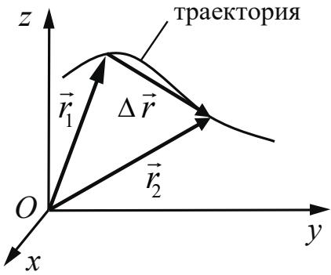 Материальная точка. Её радиус-вектор: $\vec{r}(t) = (x(t), y(t), z(t))$, траектория, | |
| перемещение: $\Delta\vec{r} = \vec{r}(t_2) - \vec{r}(t_1) = \vec{r}_2 - \vec{r}_1 = (\Delta x, \Delta y, \Delta z),$ путь. Сложение перемещений: $\Delta\vec{r}_1 = \Delta\vec{r}_2 + \Delta\vec{r}_0$ | ||
| 1.1.3 | Скорость материальной точки: $\vec{\upsilon} = \frac{\Delta\vec{r}}{\Delta t} \bigg\vert_{\Delta t \to 0} = \vec{r}_t' = (\upsilon_x, \upsilon_y, \upsilon_z),$ $\upsilon_x = \frac{\Delta x}{\Delta t} \bigg\vert_{\Delta t \to 0} = x_t', \text{ аналогично } \upsilon_y = y_t', \upsilon_z = z_t'.$ Сложение скоростей: $\vec{\upsilon}_1 = \vec{\upsilon}_2 + \vec{\upsilon}_0$. Вычисление перемещения и пути материальной точки при прямолинейном движении вдоль оси х по графику зависимости $\upsilon_x(t)$ | |
| 1.1.4 | Ускорение материальной точки: $\vec{a} = \frac{\Delta\vec{\upsilon}}{\Delta t} \bigg\vert_{\Delta t \to 0} = \vec{\upsilon}_t' = (a_x, a_y, a_z),$ $a_x = \frac{\Delta \upsilon_x}{\Delta t} \bigg\vert_{\Delta t \to 0} = (\upsilon_x)_t', \text{ аналогично } a_y = (\upsilon_y)_t', a_z = (\upsilon_z)_t'.$ | |
| 1.1.5 | Равномерное прямолинейное движение: $x(t) = x_0 + \upsilon_{0x} t$ $\upsilon_x(t) = \upsilon_{0x} = \text{const}$ | |
| 1.1.6 | Равноускоренное прямолинейное движение: $x(t) = x_0 + \upsilon_{0x} t + \frac{a_x t^2}{2}$ $\upsilon_x(t) = \upsilon_{0x} + a_x t$ $a_x = \text{const}$ $\upsilon_{2x}^2 - \upsilon_{1x}^2 = 2a_x (x_2 - x_1)$ При движении в одном направлении путь $S = \frac{\upsilon_1 + \upsilon_2}{2} \cdot t$ | |
| 1.1.7 | Свободное падение. Ускорение свободного падения. Движение тела, брошенного под углом $\alpha$ к горизонту: $\begin{cases} x(t) = x_0 + \upsilon_{0x} t = x_0 + \upsilon_0 \cos \alpha \cdot t \\ y(t) = y_0 + \upsilon_{0y} t + \frac{g_y t^2}{2} = y_0 + \upsilon_0 \sin \alpha \cdot t - \frac{gt^2}{2} \end{cases}$ 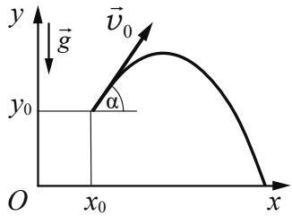 | |
| $\begin{cases} \upsilon_x(t) = \upsilon_{0x} = \upsilon_0 \cos \alpha \\ \upsilon_y(t) = \upsilon_{0y} + g_y t = \upsilon_0 \sin \alpha - gt \\ g_x = 0 \\ g_y = -g = const \end{cases}$ | ||
| 1.1.8 | Криволинейное движение. Движение материальной точки по окружности. Угловая и линейная скорость точки: $\upsilon = \omega R$. При равномерном движении точки по окружности $\omega = \frac{2\pi}{T} = 2\pi\nu$. Центростремительное ускорение точки: $a_{\text{цс}} = \frac{\upsilon^2}{R} = \omega^2 R$. Полное ускорение материальной точки | |
| 1.1.9 | Твёрдое тело. Поступательное и вращательное движение твёрдого тела | |
| 1.2 | ДИНАМИКА | |
| 1.2.1 | Инерциальные системы отсчёта. Первый закон Ньютона. Принцип относительности Галилея | |
| 1.2.2 | Масса тела. Плотность вещества: $\rho = \frac{m}{V}$ | |
| 1.2.3 | Сила. Принцип суперпозиции сил: $\vec{F}_{\text{равнодейств}} = \vec{F}_1 + \vec{F}_2 +...$ | |
| 1.2.4 | Второй закон Ньютона: для материальной точки в ИСО $\vec{F} = m\vec{a}$; $\Delta\vec{p} = \vec{F}\Delta t$ при $\vec{F} = const$ | |
| 1.2.5 | Третий закон Ньютона для материальных точек: $\vec{F}_{12} = -\vec{F}_{21}$ 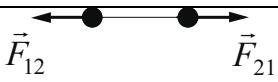 | |
| 1.2.6 | Закон всемирного тяготения: силы притяжения между точечными массами равны $F = G \frac{m_1 m_2}{R^2}$. Сила тяжести. Центр тяжести тела. Зависимость силы тяжести от высоты h над поверхностью планеты радиусом $R_0$: $mg = \frac{GMm}{(R_0 + h)^2}$ | |
| 1.2.7 | Сила упругости. Закон Гука: $F_x = -kx$ | |
| 1.2.8 | Сила трения. Сухое трение. Сила трения скольжения: $F_{\text{тр}} = \mu N$. Сила трения покоя: $F_{\text{тр}} \leq \mu N$. Коэффициент трения | |
| 1.2.9 | Давление: $p = \frac{F_\perp}{S}$ | |
| 1.3 | СТАТИКА | |
| 1.3.1 | Момент силы относительно оси вращения: $\vert M\vert = Fl$, где l – плечо силы $\vec{F}$ 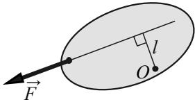 относительно оси, проходящей через точку О перпендикулярно рисунку | |
| 1.3.2 | Центр масс тела. Центр масс системы материальных точек: $\vec{r}_{\text{ц.м.}} = \frac{m_1 \vec{r}_1 + m_2 \vec{r}_2 +...}{m_1 + m_2 +...}$. В однородном поле тяжести ( $\vec{g} = \text{const}$ ) центр масс тела совпадает с его центром тяжести | |
| 1.3.3 | Условия равновесия твёрдого тела в ИСО: $\begin{cases} M_1 + M_2 +... = 0 \\ \vec{F}_1 + \vec{F}_2 +... = 0 \end{cases}$ | |
| 1.3.4 | Закон Паскаля | |
| 1.3.5 | Давление в жидкости, покоящейся в ИСО: $p = p_0 + \rho gh$ | |
| 1.3.6 | Закон Архимеда: $\vec{F}_{\text{Арх}} = -\vec{P}_{\text{вытесн}}$, если тело и жидкость покоятся в ИСО, то $F_{\text{Арх}} = pg V_{\text{вытесн}}$ Условие плавания тел | |
| 1.4 | ЗАКОНЫ СОХРАНЕНИЯ В МЕХАНИКЕ | |
| 1.4.1 | Импульс материальной точки: $\vec{p} = m\vec{\upsilon}$ | |
| 1.4.2 | Импульс системы тел: $\vec{p} = \vec{p}_1 + \vec{p}_2 +...$ | |
| 1.4.3 | Закон изменения и сохранения импульса: в ИСО $\Delta\vec{p} \equiv \Delta(\vec{p}_1 + \vec{p}_2 +...)=\vec{F}_{1_{\text{внешн}}} \Delta t + \vec{F}_{2_{\text{внешн}}} \Delta t +...$; в ИСО $\Delta\vec{p} \equiv \Delta(\vec{p}_1 + \vec{p}_2 +...)=0$, если $\vec{F}_{1_{\text{внешн}}} + \vec{F}_{2_{\text{внешн}}} +... = 0$ Реактивное движение | |
| 1.4.4 | Работа силы на малом перемещении: $A = \vert \vec{F}\vert \cdot \vert \Delta\vec{r}\vert \cdot \cos \alpha = F_x \cdot \Delta x$ 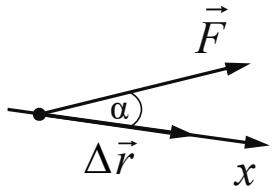 | |
| 1.4.5 | Мощность силы: если за время $\Delta t$ работа силы изменяется на $\Delta A$, то мощность силы 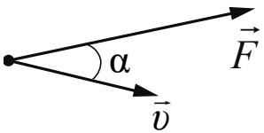 $P = \frac{\Delta A}{\Delta t} \bigg\vert_{\Delta t \to 0} = F \cdot \upsilon \cdot \cos \alpha$ | |
| 1.4.6 | Кинетическая энергия материальной точки: $E_{\text{кин}} = \frac{m\upsilon^2}{2} = \frac{p^2}{2m}$. Закон изменения кинетической энергии системы материальных точек: в ИСО $\Delta E_{\text{кин}} = A_1 + A_2 +...$ | |
| 1.4.7 | Потенциальная энергия: для потенциальных сил $A_{12} = E_{1_{\text{потенц}}} - E_{2_{\text{потенц}}} = -\Delta E_{\text{потенц}}$. Потенциальная энергия материальной точки в однородном поле тяжести: $E_{\text{потенц}} = mgh$. | |
| Потенциальная энергия упруго деформированного тела: $E_{\text{потенц}} = \frac{kx^{2}}{2}$ | ||
| 1.4.8 | Закон изменения и сохранения механической энергии: $E_{\text{мех}} = E_{\text{кин}} + E_{\text{потенц}},$ в ИСО $\Delta E_{\text{мех}} = A_{\text{всех непотенц. сил}},$ в ИСО $\Delta E_{\text{мех}} = 0$, если $A_{\text{всех непотенц. сил}} = 0$ | |
| 1.5 | МЕХАНИЧЕСКИЕ КОЛЕБАНИЯ И ВОЛНЫ | |
| 1.5.1 | Гармонические колебания материальной точки. Амплитуда и фаза колебаний. Кинематическое описание: $x(t) = A \sin(\omega t + \varphi_{0})$, $\upsilon_{x}(t) = x_{t}^{\prime},$ $a_{x}(t) = (\upsilon_{x})_{t}^{\prime} = -\omega^{2} x(t) \Rightarrow a_{x} + \omega^{2} x = 0$, где $x$ – смещение из положения равновесия. Динамическое описание: $ma_{x} = -kx$, где $k = m\omega^{2}$. Это значит, что $F_{x} = -kx$. Энергетическое описание (закон сохранения механической энергии): $\frac{m\upsilon^{2}}{2} + \frac{kx^{2}}{2} = \frac{m\upsilon_{\max}^{2}}{2} = \frac{kA^{2}}{2} = const$ | |
| Связь амплитуды колебаний смещения материальной точки с амплитудами колебаний её скорости и ускорения: $\upsilon_{\text{max}} = \omega A, a_{\text{max}} = \omega^{2} A$ | ||
| 1.5.2 | Период и частота колебаний: $T = \frac{2\pi}{\omega} = \frac{1}{\nu}$. Период малых свободных колебаний математического маятника: $T = 2\pi \sqrt{\frac{l}{g}}$. Период свободных колебаний пружинного маятника: $T = 2\pi \sqrt{\frac{m}{k}}$ | |
| 1.5.3 | Вынужденные колебания. Резонанс. Резонансная кривая | |
| 1.5.4 | Поперечные и продольные волны. Скорость распространения и длина волны: $\lambda = \upsilon T = \frac{\upsilon}{\nu}$. Интерференция и дифракция волн | |
| 1.5.5 | Звук. Скорость звука | |
| 2 | МОЛЕКУЛЯРНАЯ ФИЗИКА. ТЕРМОДИНАМИКА | |
| 2.1 | МОЛЕКУЛЯРНАЯ ФИЗИКА | |
| 2.1.1 | Модели строения газов, жидкостей и твёрдых тел. Пусть термодинамическая система (тело) состоит из N одинаковых | |
| молекул. Тогда количество вещества $\nu = \frac{N}{N_{\text{А}}} = \frac{m}{\mu}$, где $N_{\text{А}}$ — число Авогадро, m — масса системы (тела), μ — молярная масса вещества | ||
| 2.1.2 | Тепловое движение атомов и молекул вещества | |
| 2.1.3 | Взаимодействие частиц вещества | |
| 2.1.4 | Диффузия. Броуновское движение | |
| 2.1.5 | Модель идеального газа в МКТ | |
| 2.1.6 | Связь между давлением и средней кинетической энергией поступательного теплового движения молекул идеального газа (основное уравнение МКТ): $p = \frac{1}{3} m_{0} n \overline{\upsilon^{2}} = \frac{2}{3} n \cdot \overline{\left( \frac{m_{0} \upsilon^{2}}{2} \right)} = \frac{2}{3} n \cdot \overline{\varepsilon_{\text{пост}}}$, где $m_{0}$ — масса одной молекулы, $n = \frac{N}{V}$ — концентрация молекул | |
| 2.1.7 | Абсолютная температура: $T = t^{\circ} + 273 \text{K}$ | |
| 2.1.8 | Связь температуры газа со средней кинетической энергией поступательного теплового движения его молекул: $\overline{\varepsilon_{\text{пост}}} = \overline{\left( \frac{m_{0} \upsilon^{2}}{2} \right)} = \frac{3}{2} kT$ | |
| 2.1.9 | Уравнение $p = nkT$ | |
| 2.1.10 | Модель идеального газа в термодинамике: $\begin{cases} \text{Уравнение Менделеева} - \text{Клапейрона} \\ \text{Выражение для внутренней энергии} \end{cases}$ Уравнение Менделеева — Клапейрона (применимые формы записи): $pV = \frac{m}{\mu} RT = \nu RT = NkT, \ p = \frac{\rho RT}{\mu}.$ Выражение для внутренней энергии одноатомного идеального газа (применимые формы записи): $U = \frac{3}{2} \nu RT = \frac{3}{2} NkT = \frac{3}{2} \frac{m}{\mu} RT = \nu c_{\upsilon} T = \frac{3}{2} pV$ | |
| 2.1.11 | Закон Дальтона для давления смеси разреженных газов: $p = p_{1} + p_{2} + \ldots$ | |
| 2.1.12 | Изопроцессы в разреженном газе с постоянным числом молекул N (с постоянным количеством вещества ν): изотерма (T = const): $pV = \text{const}$, изохора (V = const): $\frac{p}{T} = \text{const}$, изобара (p = const): $\frac{V}{T} = \text{const}$ | |
| Графическое представление изопроцессов на pV-, pT- и VT-диаграммах. Объединенный газовый закон: $\frac{pV}{T} = const$ для постоянного количества вещества ν | ||
| 2.1.13 | Насыщенные и ненасыщенные пары. Качественная зависимость плотности и давления насыщенного пара от температуры, их независимость от объёма насыщенного пара | |
| 2.1.14 | Влажность воздуха. Относительная влажность: $\varphi = \frac{p_{\text{пара}}(T)}{p_{\text{насыщ, пара}}(T)} = \frac{\rho_{\text{пара}}(T)}{\rho_{\text{насыщ, пара}}(T)}$ | |
| 2.1.15 | Изменение агрегатных состояний вещества: испарение и конденсация, кипение жидкости | |
| 2.1.16 | Изменение агрегатных состояний вещества: плавление и кристаллизация | |
| 2.1.17 | Преобразование энергии в фазовых переходах | |
| 2.2 | ТЕРМОДИНАМИКА | |
| 2.2.1 | Тепловое равновесие и температура | |
| 2.2.2 | Внутренняя энергия | |
| 2.2.3 | Теплопередача как способ изменения внутренней энергии без совершения работы. Конвекция, теплопроводность, излучение | |
| 2.2.4 | Количество теплоты. Удельная теплоёмкость вещества с: $Q = cm\Delta T$ | |
| 2.2.5 | Удельная теплота парообразования L: $Q = Lm$. Удельная теплота плавления λ: $Q = \lambda m$. Удельная теплота сгорания топлива q: $Q = qm$ | |
| 2.2.6 | Элементарная работа в термодинамике: $A = p\Delta V$. Вычисление работы по графику процесса на pV-диаграмме | |
| 2.2.7 | Первый закон термодинамики: $Q_{12} = \Delta U_{12} + A_{12} = (U_2 - U_1) + A_{12}$. Адиабата: $Q_{12} = 0 \Rightarrow A_{12} = U_1 - U_2 = -\Delta U_{12}$ | |
| 2.2.8 | Второй закон термодинамики. Необратимые процессы | |
| 2.2.9 | Принципы действия тепловых машин. КПД: $\eta = \frac{A_{\text{за цикл}}}{Q_{\text{нагр}}} = \frac{Q_{\text{нагр}} - \vert Q_{\text{хол}}\vert}{Q_{\text{нагр}}} = 1 - \frac{\vert Q_{\text{хол}}\vert}{Q_{\text{нагр}}}$ | |
| 2.2.10 | Максимальное значение КПД. Цикл Карно: $max\eta = \eta_{\text{Карно}} = \frac{T_{\text{нагр}} - T_{\text{хол}}}{T_{\text{нагр}}} = 1 - \frac{T_{\text{хол}}}{T_{\text{нагр}}}$ | |
| 2.2.11 | Уравнение теплового баланса: $Q_1 + Q_2 + Q_3 + \ldots = 0$ | |
| 3 | ЭЛЕКТРОДИНАМИКА | |
| 3.1 | ЭЛЕКТРИЧЕСКОЕ ПОЛЕ | |
| 3.1.1 | Электризация тел и её проявления. Электрический заряд. Два вида заряда. Элементарный электрический заряд. Закон сохранения электрического заряда | |
| 3.1.2 | Взаимодействие зарядов. Точечные заряды. Закон Кулона: в однородном веществе с диэлектрической проницаемостью $\varepsilon$ $F = k \frac{\vert q_1\vert \cdot \vert q_2\vert}{\varepsilon r^2} = \frac{1}{4\pi\varepsilon\varepsilon_0} \cdot \frac{\vert q_1\vert \cdot \vert q_2\vert}{r^2}$ | |
| 3.1.3 | Электрическое поле. Его действие на электрические заряды | |
| 3.1.4 | Напряжённость электрического поля: $\vec{E} = \frac{\vec{F}}{q_{\text{пробный}}}$. Поле точечного заряда: $E_r = k \frac{q}{r^2}$, однородное поле: $\vec{E} = \text{const}.$ Картины линий напряжённости этих полей | |
| 3.1.5 | Потенциальность электростатического поля. Разность потенциалов и напряжение: $A_{12} = q(\varphi_1 - \varphi_2) = -q\Delta\varphi = qU$. Потенциальная энергия заряда в электростатическом поле: $W = q\varphi$. $A = -\Delta W$ Потенциал электростатического поля: $\varphi = \frac{W}{q}$. Связь напряжённости поля и разности потенциалов для однородного электростатического поля: $U = Ed$ | |
| 3.1.6 | Принцип суперпозиции электрических полей: $\vec{E} = \vec{E}_1 + \vec{E}_2 + \ldots, \quad \varphi = \varphi_1 + \varphi_2 + \ldots$ | |
| 3.1.7 | Проводники в электростатическом поле. Условие равновесия зарядов: внутри проводника $\vec{E} = 0$, внутри и на поверхности проводника $\varphi = \text{const}$ | |
| 3.1.8 | Диэлектрики в электростатическом поле. Диэлектрическая проницаемость вещества $\varepsilon$ | |
| 3.1.9 | Конденсатор. Электроёмкость конденсатора: $C = \frac{q}{U}$. Электроёмкость плоского конденсатора: $C = \frac{\varepsilon\varepsilon_0S}{d} = \varepsilon C_0$ | |
| 3.1.10 | Параллельное соединение конденсаторов: $q = q_1 + q_2 + \ldots, U_1 = U_2 = \ldots, C_{\text{паралл}} = C_1 + C_2 + \ldots$ Последовательное соединение конденсаторов: | |
| $U = U_1 + U_2 + \dots, q_1 = q_2 = \dots, \frac{1}{C_{\text{посл}}} = \frac{1}{C_1} + \frac{1}{C_2} + \dots$ | ||
| 3.1.11 | Энергия заряженного конденсатора: $W_C = \frac{qU}{2} = \frac{CU^2}{2} = \frac{q^2}{2C}$ | |
| 3.2 | ЗАКОНЫ ПОСТОЯННОГО ТОКА | |
| 3.2.1 | Сила тока: $I = \frac{\Delta q}{\Delta t} \bigg\vert_{\Delta t \to 0}$. Постоянный ток: $I = \text{const}$ Для постоянного тока $q = It$ | |
| 3.2.2 | Условия существования электрического тока. Напряжение U и ЭДС E | |
| 3.2.3 | Закон Ома для участка цепи: $I = \frac{U}{R}$ | |
| 3.2.4 | Электрическое сопротивление. Зависимость сопротивления однородного проводника от его длины и сечения. Удельное сопротивление вещества. $R = \rho \frac{l}{S}$ | |
| 3.2.5 | Источники тока. ЭДС источника тока: $\mathcal{E} = \frac{A_{\text{сторонних сил}}}{q}$. Внутреннее сопротивление источника тока | |
| 3.2.6 | Закон Ома для полной (замкнутой) электрической цепи: $\mathcal{E} = IR + Ir$, откуда 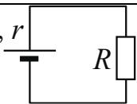 $I = \frac{\mathcal{E}}{R + r}$ | |
| 3.2.7 | Параллельное соединение проводников: $I = I_1 + I_2 +..., U_1 = U_2 =..., \frac{1}{R_{\text{паралл}}} = \frac{1}{R_1} + \frac{1}{R_2} +...$. Последовательное соединение проводников: $U = U_1 + U_2 +..., I_1 = I_2 =..., R_{\text{посл}} = R_1 + R_2 +...$ | |
| 3.2.8 | Работа электрического тока: $A = IUt$. Закон Джоуля – Ленца: $Q = I^2Rt$. На резисторе $R: Q = A = I^2Rt = IUt = \frac{U^2}{R}t$ | |
| 3.2.9 | Мощность электрического тока: $P = \frac{\Delta A}{\Delta t} \bigg\vert_{\Delta t \to 0} = IU$. Тепловая мощность, выделяемая на резисторе: $P = I^2R = \frac{U^2}{R} = IU$. Мощность источника тока: $P_{\mathcal{E}} = \frac{\Delta A_{\text{ст. сил}}}{\Delta t} \bigg\vert_{\Delta t \to 0} = \mathcal{E}I$ | |
| 3.2.10 | Свободные носители электрических зарядов в проводниках. Механизмы проводимости твёрдых металлов, растворов и | |
| расплавов электролитов, газов. Полупроводники. Полупроводниковый диод | ||
| 3.3 | МАГНИТНОЕ ПОЛЕ | |
| 3.3.1 | Механическое взаимодействие магнитов. Магнитное поле. Вектор магнитной индукции. Принцип суперпозиции магнитных полей: $\vec{B} = \vec{B}_{1} + \vec{B}_{2} + \ldots$. Линии индукции магнитного поля. Картина линий индукции магнитного поля полосового и подковообразного постоянных магнитов | |
| 3.3.2 | Опыт Эрстеда. Магнитное поле проводника с током. Картина линий индукции магнитного поля длинного прямого проводника и замкнутого кольцевого проводника, катушки с током | |
| 3.3.3 | Сила Ампера, её направление и величина: $F_{\text{А}} = IBl \sin \alpha$, где $\alpha$ – угол между направлением проводника и вектором $\vec{B}$ | |
| 3.3.4 | Сила Лоренца, её направление и величина: $F_{\text{Лор}} = \vert q\vert \upsilon B \sin \alpha$, где $\alpha$ – угол между векторами $\vec{\upsilon}$ и $\vec{B}$. Движение заряженной частицы в однородном магнитном поле | |
| 3.4 | ЭЛЕКТРОМАГНИТНАЯ ИНДУКЦИЯ | |
| 3.4.1 | Поток вектора магнитной индукции: $\Phi = B_{n}S = BS \cos \alpha$ 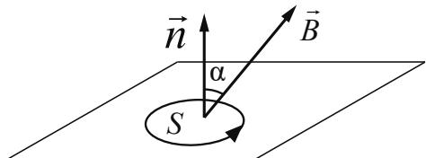 | |
| 3.4.2 | Явление электромагнитной индукции. ЭДС индукции | |
| 3.4.3 | Закон электромагнитной индукции Фарадея: $\left. \mathcal{E}_{i} = -\frac{\Delta \Phi}{\Delta t} \right\vert_{\Delta t \to 0} = -\Phi'_{t}$ | |
| 3.4.4 | ЭДС индукции в прямом проводнике длиной l, движущемся со скоростью $\vec{\upsilon}$ $(\vec{\upsilon} \perp \vec{l})$ в однородном магнитном поле В: $\vert \mathcal{E}_{i}\vert = Bl\upsilon \cos \alpha$, где $\alpha$ – угол между вектором В и нормалью $\vec{n}$ к плоскости, в которой лежат векторы $\vec{l}$ и $\vec{\upsilon}$; если $\vec{l} \perp \vec{B}$ и $\vec{\upsilon} \perp \vec{B}$, то $\vert \mathcal{E}_{i}\vert = Bl\upsilon$ 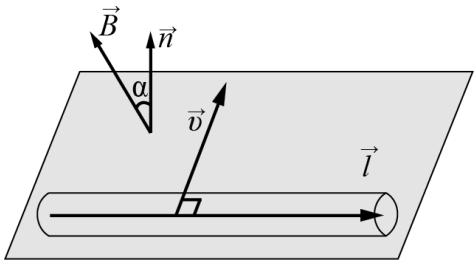 | |
| 3.4.5 | Правило Ленца | |
| 3.4.6 | Индуктивность: $L = \frac{\Phi}{I}$, или $\Phi = LI$. | |
| Самоиндукция. ЭДС самоиндукции: $\mathcal{E}_{si} = -L \frac{\Delta I}{\Delta t} \bigg\vert_{\Delta t \to 0} = -LI'_t$ | ||
| 3.4.7 | Энергия магнитного поля катушки с током: $W_L = \frac{LI^2}{2}$ | |
| 3.5 | ЭЛ ЕКТРОМАГНИТНЫЕ КОЛЕБАНИЯ И ВОЛНЫ | |
| 3.5.1 | Колебательный контур. Свободные электромагнитные колебания в идеальном колебательном контуре: $\begin{cases} q(t) = q_{\max} \sin(\omega t + \varphi_0) \\ I(t) = q'_t = \omega q_{\max} \cos(\omega t + \varphi_0) = I_{\max} \cos(\omega t + \varphi_0) \end{cases}$ 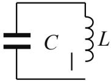 Формула Томсона: $T = 2\pi \sqrt{LC}$, откуда $\omega = \frac{2\pi}{T} = \frac{1}{\sqrt{LC}}$. Связь амплитуды заряда конденсатора с амплитудой силы тока при свободных электромагнитных колебаниях в идеальном колебательном контуре: $q_{\max} = \frac{I_{\max}}{\omega}$ | |
| 3.5.2 | Закон сохранения энергии в идеальном колебательном контуре: $\frac{CU^2}{2} + \frac{LI^2}{2} = \frac{CU^2_{\max}}{2} = \frac{LI^2_{\max}}{2} = const.$ | |
| 3.5.3 | Вынужденные электромагнитные колебания. Резонанс | |
| 3.5.4 | Переменный ток. Производство, передача и потребление электрической энергии | |
| 3.5.5 | Свойства электромагнитных волн. Взаимная ориентация векторов в электромагнитной волне в вакууме: $\vec{E} \perp \vec{B} \perp \vec{c}$ | |
| 3.5.6 | Шкала электромагнитных волн. Применение электромагнитных волн в технике и быту | |
| 3.6 | ОПТИКА | |
| 3.6.1 | Прямолинейное распространение света в однородной среде. Точечный источник. Луч света | |
| 3.6.2 | Законы отражения света. $\alpha = \beta$ 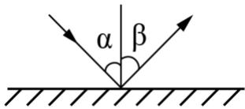 | |
| 3.6.3 | Построение изображений в плоском зеркале | |
| 3.6.4 | Законы преломления света. Преломление света: $n_1 \sin \alpha = n_2 \sin \beta$. Абсолютный показатель преломления: $n_{\text{абс}} = \frac{c}{\upsilon}$. Относительный показатель преломления: $n_{\text{отн}} = \frac{n_2}{n_1} = \frac{\upsilon_1}{\upsilon_2}$. | |
| Ход лучей в призме. Соотношение частот и соотношение длин волн при переходе монохроматического света через границу раздела двух оптических сред: $\nu_{1} = \nu_{2}, n_{1}\lambda_{1} = n_{2}\lambda_{2}$ | ||
| 3.6.5 | Полное внутреннее отражение. Предельный угол полного внутреннего отражения: $\sin\alpha_{\text{пр}} = \frac{1}{n_{\text{отн}}} = \frac{n_{2}}{n_{1}}$ 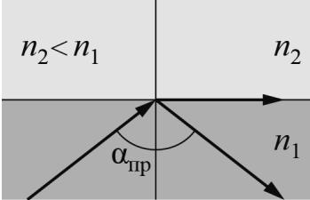 | |
| 3.6.6 | Собирающие и рассеивающие линзы. Тонкая линза. Фокусное расстояние и оптическая сила тонкой линзы: $D = \frac{1}{F}$ | |
| 3.6.7 | Формула тонкой линзы: $\frac{1}{d} + \frac{1}{f} = \frac{1}{F}.$ Увеличение, даваемое линзой: 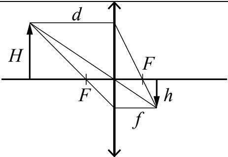 $\Gamma = \frac{h}{H} = \frac{\vert f\vert}{d}.$ В случае рассеивающей линзы: $D < 0 \Rightarrow F = \frac{1}{D} < 0, \Gamma = \frac{h}{H} = \frac{\vert f\vert}{d} < 1$ | |
| 3.6.8 | Ход луча, прошедшего линзу под произвольным углом к её главной оптической оси. Построение изображений точки и отрезка прямой в собирающих и рассеивающих линзах и их системах | |
| 3.6.9 | Фотоаппарат как оптический прибор. Глаз как оптическая система | |
| 3.6.10 | Интерференция света. Когерентные источники. Условия наблюдения максимумов и минимумов в интерференционной картине от двух синфазных когерентных источников: максимумы – $\Delta = 2m\frac{\lambda}{2}, m = 0, \pm 1, \pm 2, \pm 3, \dots$, минимумы – $\Delta = (2m + 1)\frac{\lambda}{2}, m = 0, \pm 1, \pm 2, \pm 3, \dots$ | |
| 3.6.11 | Дифракция света. Дифракционная решётка. Условие наблюдения главных максимумов при нормальном падении монохроматического света с длиной волны $\lambda$ на решётку с периодом d: $d \sin\varphi_{m} = m\lambda, m = 0, \pm 1, \pm 2, \pm 3, \dots$ | |
| 3.6.12 | Дисперсия света | |
| 4 | КВАНТОВАЯ ФИЗИКА | |
| 4.1 | КОРПУСКУЛЯРНО-ВОЛНОВОЙ ДУАЛИЗМ | |
| 4.1.1 | Гипотеза М. Планка о квантах. Формула Планка: $E = h\nu$ | |
| 4.1.2 | Фотоны. Энергия фотона: $E = h\nu = \frac{hc}{\lambda} = pc$. Импульс фотона: $p = \frac{E}{c} = \frac{h\nu}{c} = \frac{h}{\lambda}$ | |
| 4.1.3 | Фотоэффект. Опыты А.Г. Столетова. Законы фотоэффекта | |
| 4.1.4 | Уравнение Эйнштейна для фотоэффекта: $E_{\text{фотона}} = A_{\text{выхода}} + E_{\text{кин max}}$, где $E_{\text{фотона}} = h\nu = \frac{hc}{\lambda}$, $A_{\text{выхода}} = h\nu_{\text{кр}} = \frac{hc}{\lambda_{\text{кр}}}$, $E_{\text{кин max}} = \frac{m\upsilon_{\text{max}}^2}{2} = eU_{\text{зап}}$ | |
| 4.1.5 | Давление света. Давление света на полностью отражающую поверхность и на полностью поглощающую поверхность | |
| 4.2 | ФИЗИКА АТОМА | |
| 4.2.1 | Планетарная модель атома | |
| 4.2.2 | Постулаты Бора. Излучение и поглощение фотонов при переходе атома с одного уровня энергии на другой: $h\nu_{mn} = \frac{hc}{\lambda_{mn}} = \vert E_n - E_m\vert $ | |
| 4.2.3 | Линейчатые спектры. Спектр уровней энергии атома водорода: $E_n = \frac{-13,6 \text{ эВ}}{n^2}$, $n=1,2,3,...$ | |
| 4.3 | ФИЗИКА АТОМНОГО ЯДРА | |
| 4.3.1 | Нуклонная модель ядра Гейзенберга – Иваненко. Заряд ядра. Массовое число ядра. Изотопы | |
| 4.3.2 | Радиоактивность. Альфа-распад: ${}^{A}_{Z}\mathrm{X} \to {}^{A-4}_{Z-2}\mathrm{Y} + {}^{4}_{2}\mathrm{He}$. Бета-распад. Электронный β-распад: ${}^{A}_{Z}\mathrm{X} \to {}^{A}_{Z+1}\mathrm{Y} + {}^{0}_{-1}e + \tilde{\nu}_e$. Позитронный β-распад: ${}^{A}_{Z}\mathrm{X} \to {}^{A}_{Z-1}\mathrm{Y} + {}^{0}_{+1}\tilde{e} + \nu_e$. Гамма-излучение | |
| 4.3.3 | Закон радиоактивного распада: $N(t) = N_0 \cdot 2^{-\frac{t}{T}}$. Пусть m – масса радиоактивного вещества. Тогда $m(t) = m_0 \cdot 2^{-\frac{t}{T}}$ | |
| 4.3.4 | Ядерные реакции. Деление и синтез ядер |
»;